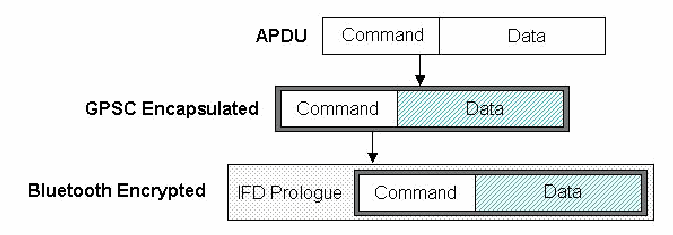
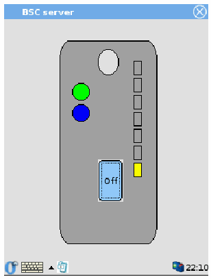
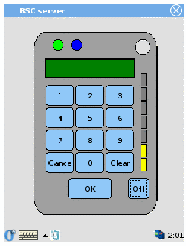
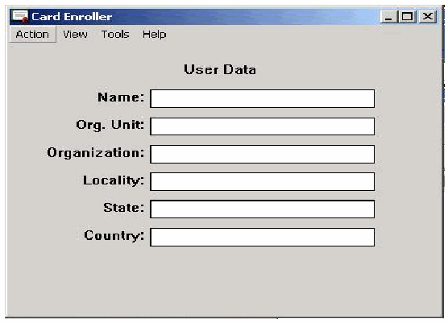
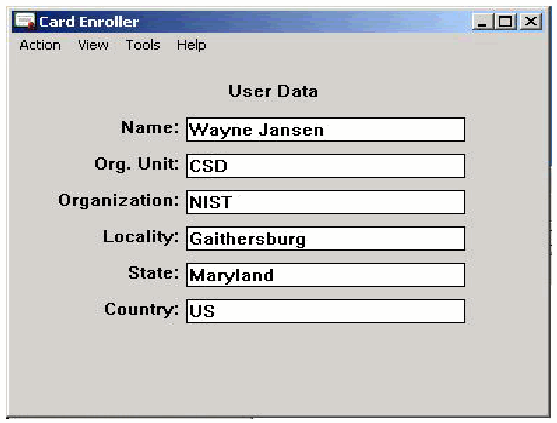

NIST IR 7206 日本語訳
英語タイトル : Smart Cards and Mobile Device Authentication: an Overview and Implementation日本語タイトル : スマートカードとモバイル機器認証：概要と実装
公開日 : 2005-07-01
原文URL : https://csrc.nist.gov/pubs/ir/7206/final
原本 PDF : https://doi.org/10.6028/NIST.IR.7206
訳文 : 有志による非公式の日本語訳（AI による翻訳とレビュー）。全 475 段落のうち 464 段落を翻訳済み（原文取得日 : 2026-10-31）
[要約] NIST IR 7206 は、モバイルハンドヘルド機器の利用者認証にスマートカードを適用する 2 種類の解決策について述べた報告書です。スマートカードは多くの組織で長く認証機構として選ばれてきましたが、標準サイズのスマートカードのリーダーを容易にサポートするハンドヘルド機器はほとんどないとされています。本書は、ハンドヘルド機器がサポートする標準インターフェースを使い、より扱いにくい標準サイズのスマートカードリーダーの使用を避ける、2 種類の新しいスマートカードを取り上げ、マルチモード認証フレームワーク（MAF）と Bluetooth スマートカード（BSC）認証を説明しています。これらの解決策は、組織が認証やその他のセキュリティサービスにスマートカードを適用する助けとなることを目的としており、設計と実装の詳細を示しています。
［NIST のロゴ。公的な標章のため、この非公式サイトには掲載していません。原本 PDF を参照してください。］
NISTIR 7206
NISTIR 7206
Smart Cards and Mobile Device Authentication: An Overview and Implementation
スマートカードとモバイル機器認証: 概要と実装
Wayne Jansen
Serban Gavrila
Clément Séveillac
Vlad Korolev
Wayne Jansen
Serban Gavrila
Clément Séveillac
Vlad Korolev
NISTIR 7206
NISTIR 7206
Smart Cards and Mobile Handheld Devices: An Overview and Implementation
スマートカードとモバイルハンドヘルド機器: 概要と実装
Wayne Jansen
Serban Gavrila
Clément Séveillac
Vlad Korolev
Wayne Jansen
Serban Gavrila
Clément Séveillac
Vlad Korolev
COMPUTER SECURITY
コンピューターセキュリティ
Computer Security Division
Information Technology Laboratory
National Institute of Standards and Technology
Gaithersburg, MD 20988-8930
Computer Security Division
Information Technology Laboratory
National Institute of Standards and Technology
Gaithersburg, MD 20988-8930
July 2005
2005年7月
U.S. Department of Commerce
Carlos M. Gutierrez, Secretary
米国商務省
Carlos M. Gutierrez 長官
Technology Administration
Phillip J. Bond, Under Secretary of Commerce for Technology
技術局
Phillip J. Bond、商務次官（技術担当）
National Institute of Standards and Technology
William A. Jeffrey, Director
国立標準技術研究所
William A. Jeffrey、NIST 所長
Reports on Computer Systems Technology
コンピューターシステム技術に関する報告書
The Information Technology Laboratory (ITL) at the National Institute of Standards and Technology (NIST) promotes the U.S. economy and public welfare by providing technical leadership for the Nation’s measurement and standards infrastructure. ITL develops tests, test methods, reference data, proof of concept implementations, and technical analysis to advance the development and productive use of information technology. ITL’s responsibilities include the development of technical, physical, administrative, and management standards and guidelines for the cost-effective security and privacy of sensitive unclassified information in Federal computer systems. This Interagency Report discusses ITL’s research, guidance, and outreach efforts in computer security, and its collaborative activities with industry, government, and academic organizations.
国立標準技術研究所（NIST）の情報技術研究所（ITL）は、国家の測定・標準インフラに対する技術的リーダーシップを提供することで、米国経済と公共の福祉を促進しています。ITL は、情報技術の発展と生産的な利用を推進するため、試験、試験方法、参照データ、概念実証の実装、および技術分析を開発しています。ITL の責務には、連邦コンピューターシステムにおける機密性の高い非機密情報の費用対効果の高いセキュリティとプライバシーを実現するための、技術的、物理的、管理的、および運用管理上の標準とガイドラインの策定が含まれます。この省庁間報告書では、コンピューターセキュリティに関する ITL の研究、ガイダンス、およびアウトリーチの取り組みと、産業界、政府、および学術機関との共同活動について述べています。
National Institute of Standards and Technology Interagency Report
47 pages (2005)
国立標準技術研究所 省庁間報告書
47ページ（2005年）
Certain commercial entities, equipment, or materials may be identified in this document in order to describe an experimental procedure or concept adequately. Such identification is not intended to imply recommendation or endorsement by the National Institute of Standards and Technology, nor is it intended to imply that the entities, materials, or equipment are necessarily the best available for the purpose.
本文書では、実験手順や概念を適切に説明するために、特定の商業的主体、機器、または資材を明示する場合があります。そのような明示は、国立標準技術研究所による推奨や支持を意味するものではなく、それらの主体、資材、機器がその目的に利用可能な最良のものであるとは限らないことを意味するものでもありません。
Abstract
概要
The use of mobile handheld devices within the workplace is expanding rapidly. These devices are no longer viewed as coveted gadgets for early technology adopters, but have instead become indispensable tools that offer competitive business advantages for the mobile workforce. While these devices provide productivity benefits, they also pose new risks to an organization’s security by the information they contain or can access remotely. Enabling adequate user authentication is the first line of defense against unauthorized use of an unattended, lost, or stolen handheld device. Smart cards have long been the choice of authentication mechanism for many organizations; however, few handheld devices easily support readers for standard-size smart cards.
職場でのモバイルハンドヘルド機器の利用は急速に拡大しています。これらの機器はもはや、新技術をいち早く取り入れる人々が欲しがる小物とは見なされておらず、モバイルワーカーにとって競争上の事業優位をもたらす不可欠な道具になっています。これらの機器は生産性の向上をもたらす一方で、機器が保持する、または遠隔からアクセスできる情報により、組織のセキュリティに新たなリスクをもたらします。適切な利用者認証を可能にすることは、放置された、紛失した、または盗まれたハンドヘルド機器の不正使用に対する第一の防御線です。スマートカードは、多くの組織で長く認証機構として選ばれてきましたが、標準サイズのスマートカードのリーダーを容易にサポートするハンドヘルド機器はほとんどありません。
This report describes two novel types of smart cards that use standard interfaces supported by handheld devices, avoiding use of the more cumbersome standard-size smart card readers. These solutions are aimed at helping organization apply smart cards for authentication and other security services. Details of the design and implementation are provided.
本報告書では、ハンドヘルド機器がサポートする標準インターフェースを使用し、扱いにくい標準サイズのスマートカードリーダーを使わずに済む、2 種類の新しいスマートカードについて説明します。これらの解決策は、組織が認証やその他のセキュリティサービスにスマートカードを適用できるよう支援することを目的としています。設計と実装の詳細を示します。
Table of Contents
目次
Table of Contents
目次
Introduction
はじめに
With the trend toward a highly mobile workforce, the use of handheld devices such as Personal Digital Assistants (PDAs) is growing at an ever-increasing rate. These devices are relatively inexpensive productivity tools that are quickly becoming a necessity in government and industry. Most handheld devices can be configured to send and receive electronic mail and browse the Internet using wireless communications. While such devices have their limitations, they are nonetheless extremely useful in managing appointments and contact information, reviewing documents and spreadsheets, corresponding via electronic mail and instant messaging, delivering presentations, and accessing remote corporate data.
モバイルワーカーが大きく増える傾向にあり、携帯情報端末（PDA）などのハンドヘルド機器の利用は、ますます速い勢いで増えています。これらの機器は比較的安価な生産性向上の道具であり、政府と産業界で急速に必需品になりつつあります。ほとんどのハンドヘルド機器は、無線通信を使って電子メールの送受信やインターネットの閲覧ができるよう構成できます。こうした機器には制約があるものの、予定や連絡先の管理、文書や表計算の閲覧、電子メールやインスタントメッセージによるやり取り、プレゼンテーションの実施、遠隔の企業データへのアクセスに極めて有用です。
Manufacturers produce handheld devices using a broad range of hardware and software. Unlike desktops and notebook computers, handheld devices typically support a set of interfaces that are oriented toward user mobility. Handheld devices are characterized by their small physical size, limited storage and processing power, and battery-powered operation. Most Personal Digital Assistant (PDA) devices provide adequate memory (at least 32MB Flash ROM and 64MB RAM) and processing speed (200Mhz or higher) for basic organizational use. Such devices come equipped with a LCD touch screen (one-quarter VGA or higher) and a microphone/ soundcard/ speaker, but usually lack a QWERTY keypad. One or more wireless interfaces, such as infrared or radio (e.g., Bluetooth and WiFi) are also built-in for communication over limited distances to other devices and network access points; so too are wired interfaces (e.g., serial and USB) for synchronizing data with a desktop computer. Many high-end PDA devices also support Secure Digital (SD) and Compact Flash (CF) card slots for feature expansion. Over their course of use, such handheld devices can accumulate significant amounts of sensitive corporate information (e.g., medical or law enforcement data) and be configured for access to corporate resources via wireless and wired communications.
製造者は、幅広いハードウェアとソフトウェアを使ってハンドヘルド機器を製造しています。デスクトップやノート型コンピューターと異なり、ハンドヘルド機器は通常、利用者の移動性を重視した一連のインターフェースをサポートします。ハンドヘルド機器の特徴は、物理的なサイズが小さいこと、記憶容量と処理能力が限られていること、電池で動作することです。ほとんどの携帯情報端末（PDA）は、基本的な組織用途に十分なメモリ（少なくとも 32MB のフラッシュ ROM と 64MB の RAM）と処理速度（200Mhz 以上）を備えています。こうした機器には、LCD タッチスクリーン（4分の1 VGA 以上）とマイク／サウンドカード／スピーカーが備わっていますが、通常は QWERTY キーパッドがありません。赤外線や無線（Bluetooth や WiFi など）といった 1 つ以上の無線インターフェースも、ほかの機器やネットワークアクセスポイントと限られた距離で通信するために内蔵されています。また、デスクトップコンピューターとデータを同期するための有線インターフェース（シリアルや USB など）も内蔵されています。多くの高性能 PDA は、機能拡張のための Secure Digital（SD）カードスロットと Compact Flash（CF）カードスロットにも対応しています。使用するうちに、こうしたハンドヘルド機器には、医療データや法執行機関のデータなど、機微な企業情報が大量に蓄積されることがあり、無線および有線通信を介して企業資源にアクセスするよう構成されることがあります。
One of the most serious security threats to any computing device is unauthorized use. User authentication is the first line of defense against this threat. Unfortunately, management oversight of user authentication is a persistent problem, particularly with handheld devices, which tend to be at the fringes of an organization’s influence. Other security issues related to authentication that loom over their use include the following items:
どのコンピューティング機器にとっても、最も深刻なセキュリティ脅威の 1 つは不正使用です。利用者認証は、この脅威に対する第一の防御線です。残念ながら、利用者認証に対する管理上の監督は慢性的な問題であり、とりわけ組織の影響が及びにくい周縁部にあることの多いハンドヘルド機器で顕著です。ハンドヘルド機器の利用に付きまとう、認証に関するその他のセキュリティ上の問題には、次のものがあります。
•Because of their small size, handheld devices are easily lost or stolen.
•サイズが小さいため、ハンドヘルド機器は容易に紛失したり盗まれたりします。
•User authentication may be disabled, a common default mode, divulging the contents of the device to anyone who possesses it.
•利用者認証が無効にされている場合があり（よくある初期設定）、機器を手にした誰に対しても機器の内容が漏れてしまいます。
•Even if user authentication is enabled, the authentication mechanism may be weak or easily circumvented.
•利用者認証が有効であっても、認証機構が弱い、または容易に回避される場合があります。
•Once authentication is enabled, changing the authentication information regularly is seldom done.
•いったん認証を有効にすると、認証情報を定期的に変更することはほとんど行われません。
•Limit processing power of the device, may preclude the use of computationally intensive authentication techniques or cryptographic algorithms.
•機器の処理能力が限られているため、計算量の多い認証技術や暗号アルゴリズムを使えない場合があります。
Smart card authentication is perhaps the best-known example of a proof by possession mechanism. Other classes of authentication mechanisms include proof by knowledge (e.g., passwords) and proof by property (e.g., fingerprints). Smart cards are credit-card-size, plastic cards that host an embedded computer chip containing an operating system, programs, and data, and can be imprinted with a photo, a magnetic strip, or other information, for dual use as a physical identification badge [Pol97]. When used for user authentication, smart cards can help to improve the security of a device as well as provide additional security services. Many organizational security infrastructures incorporate smart cards. However, standard size smart cards are generally not amenable to handheld devices because of the relatively large size of the card, the need for a suitable card reader, and the difficulty and cumbersomeness of interfacing a reader to the device.
スマートカード認証は、おそらく、所持による証明（proof by possession）の機構として最もよく知られた例です。認証機構のほかの種類には、知識による証明（パスワードなど）と、本人の性質による証明（指紋など）があります。スマートカードは、オペレーティングシステム、プログラム、データを含むコンピューターチップを埋め込んだ、クレジットカードサイズのプラスチックカードであり、写真、磁気ストライプ、その他の情報を印刷して、物理的な身分証明バッジとの兼用にできます [Pol97]。利用者認証に使うと、スマートカードは、機器のセキュリティを向上させるとともに、追加のセキュリティサービスを提供する助けになります。多くの組織のセキュリティ基盤には、スマートカードが組み込まれています。しかし、標準サイズのスマートカードは、カードが比較的大きいこと、適切なカードリーダーが必要なこと、リーダーを機器に接続することが困難で煩雑なことから、一般にハンドヘルド機器に向いていません。
This report provides an overview of two novel types of smart card that use standard interfaces supported by most handheld devices, instead of those interfaces favored by most smart card readers. The report describes how these forms of smart card can be used for authenticating users on handheld devices and provides details of the solutions’ design and implementation. The authentication mechanisms were implemented in C and C++ on an iPAQ Personal Digital Assistant (PDA), running the Familiar distribution of the Linux operating system from handhelds.org and the Open Palmtop Integrated Environment (OPIE). OPIE is an open-source implementation of the Qtopia graphical environment of TrollTech. OPIE and Qtopia are both built with Qt/Embedded, a C++ toolkit for graphical user interface (GUI) and application development for embedded devices, which includes its own windowing system. The Familiar distribution was modified with a multi-mode authentication framework [Jan03a] that includes a policy enforcement engine, which governs the behavior of both code modules and users [Jan03b]. That framework provides the facility to add new authentication mechanism modules and have them execute in a prescribed order.
本報告書は、ほとんどのスマートカードリーダーが好むインターフェースではなく、ほとんどのハンドヘルド機器がサポートする標準インターフェースを使う、2 種類の新しいスマートカードの概要を示します。報告書は、これらの形態のスマートカードをハンドヘルド機器での利用者認証にどのように使えるかを説明し、両解決策の設計と実装の詳細を示します。認証機構は、handhelds.org の Linux オペレーティングシステムの Familiar ディストリビューションと Open Palmtop Integrated Environment（OPIE）を実行する iPAQ 携帯情報端末（PDA）上で、C と C++ で実装されました。OPIE は、TrollTech の Qtopia グラフィカル環境のオープンソース実装です。OPIE と Qtopia はいずれも、組込み機器向けのグラフィカルユーザーインターフェース（GUI）とアプリケーション開発用の C++ ツールキットで、独自のウィンドウシステムを含む Qt/Embedded で構築されています。Familiar ディストリビューションは、コードモジュールと利用者の双方の振る舞いを統制するポリシー強制エンジン [Jan03b] を含む、マルチモード認証フレームワーク [Jan03a] で修正されました。このフレームワークは、新しい認証機構モジュールを追加し、それらを所定の順序で実行させる機能を提供します。
Background
背景
Smart cards are designed to protect the information they contain, and usually require a PIN to verify the user’s identity before granting access to on-card information. The computer chip on the card requires a smart card reader to obtain power and a clock signal and to communicate with the computing platform. Tamper resistance techniques are used to protect the contents of the chip. Once contact is made with the reader, a smart card uses a serial interface to communicate with software running on the computing platform. Java Card is currently one of the more popular operating systems for smart cards. Data units received by the smart card are processed by Java applications installed on the card. The Java Card runtime facilitates the development and deployment of Java applications to support authentication and other security-related applications, such as those involving electronic commerce.
スマートカードは、保持する情報を保護するよう設計されており、通常は、カード上の情報へのアクセスを許可する前に、利用者の識別情報を検証するための PIN を必要とします。カード上のコンピューターチップは、電力とクロック信号を得て、コンピューティングプラットフォームと通信するために、スマートカードリーダーを必要とします。チップの内容を保護するために、耐タンパー技術が使われます。リーダーと接触すると、スマートカードは、シリアルインターフェースを使って、コンピューティングプラットフォーム上で動作するソフトウェアと通信します。Java Card は、現在、スマートカード向けのより人気のあるオペレーティングシステムの 1 つです。スマートカードが受け取ったデータユニットは、カードにインストールされた Java アプリケーションによって処理されます。Java Card ランタイムは、認証や、電子商取引に関するものなど、その他のセキュリティ関連のアプリケーションをサポートする Java アプリケーションの開発と配備を容易にします。
PDA/Smart Card Interfaces
PDA/スマートカードのインターフェース
The capabilities and form factor of smart cards are compatible with some handheld devices, provided that a reader can somehow interface with the device and a compatible driver is available for the platform’s operating system. For example, a number of manufacturers produce smart card readers as hardware modules that fit into a type II PCMCIA Card slot. These readers accept standard size smart cards, which can be obtained separately. A platform, such as an iPAQ 5550 PDA, whose expansion options include both single and double PCMCIA slot expansion sleeves, can readily accept such readers and operate them, once a suitable driver is found and installed. More elegant solutions also exist such as the Blue Jacket from Axcess Mobile Communications, which incorporates a smart card reader within the expansion sleeve and can support an optional Bluetooth communications and a type II compact flash interface [Blue]. In either case, however, such solutions are limited to certain types of PDAs and add considerable bulk to the device.
スマートカードの機能と形状は、リーダーを何らかの方法で機器に接続でき、プラットフォームのオペレーティングシステム用の互換性のあるドライバーが利用できれば、一部のハンドヘルド機器と互換性があります。たとえば、多くの製造者が、type II PCMCIA カードスロットに収まるハードウェアモジュールとして、スマートカードリーダーを製造しています。これらのリーダーは、別途入手できる標準サイズのスマートカードを受け付けます。iPAQ 5550 PDA のように、拡張オプションに単一と二重の PCMCIA スロット拡張スリーブの両方があるプラットフォームは、適切なドライバーが見つかってインストールされれば、そのようなリーダーを容易に受け入れて動作させられます。Axcess Mobile Communications の Blue Jacket のような、より洗練された解決策もあります。これは、拡張スリーブの中にスマートカードリーダーを組み込み、オプションの Bluetooth 通信と type II の compact flash インターフェースをサポートできます [Blue]。しかしどちらの場合も、そのような解決策は特定の種類の PDA に限られ、機器にかなりのかさを加えます。
Smart cards come in other form factors. A popular format emerging for smart cards is a USB key fob. This chewing-gum-pack sized hardware component has a printed circuit board with a processor and memory encased within a plastic housing with a USB connector at one end. Many manufacturers produce USB devices that function identically to smart cards and, since they interface through a USB port, eliminate the need for a reader. Currently, however, very few PDA devices support host USB ports, which are needed to interface to these peripherals. One constraining factor is that the PDA would need to draw on its battery to power any peripherals plugged into the USB port.
スマートカードには、ほかの形状もあります。スマートカードとして新たに普及しつつある形式が、USB キーホルダー型です。このチューインガムのパックほどの大きさのハードウェア部品は、プロセッサーとメモリを載せたプリント基板を、一端に USB コネクターのあるプラスチックの筐体に収めたものです。多くの製造者が、スマートカードと同一に機能する USB 機器を製造しており、それらは USB ポートを通じて接続するため、リーダーが不要です。しかし現在のところ、これらの周辺機器との接続に必要な USB ホストポートをサポートする PDA 機器は、ほとんどありません。制約となる要因の 1 つは、USB ポートに差し込まれた周辺機器に電力を供給するために、PDA が電池を使う必要があることです。
Another alternative is the iButton, a 16mm computer chip contained in a stainless steel shell, able to be mounted in jewelry (e.g., ring, bracelet, necklace) [Dal02]. Capabilities of these button size devices range from a simple memory token to a microprocessor and arithmetic accelerator able to support a Java Card-compliant Virtual Machine. However, a button receptacle incorporated into the device or easily added (e.g., via a compact flash card) is needed to facilitate their use with PDA devices. USB holders are also available for iButtons, but require a host USB port. Thus, one obstacle in using smart card functionality to authenticate users on handheld devices is packaging the functionality in a form factor that is compact, unencumbering, and compatible with the capabilities possessed by handheld devices.
もう 1 つの選択肢は iButton です。これは、ステンレス鋼の殻に収められた 16mm のコンピューターチップで、宝飾品（指輪、ブレスレット、ネックレスなど）に取り付けることができます [Dal02]。このボタンサイズの機器の能力は、単純なメモリトークンから、Java Card 準拠の仮想マシンをサポートできるマイクロプロセッサーと演算アクセラレーターまで幅があります。ただし、PDA 機器でこれらを使いやすくするには、機器に組み込まれた、または（compact flash カードなどを介して）容易に追加できるボタン用のレセプタクルが必要です。iButton 用の USB ホルダーもありますが、USB ホストポートが必要です。このように、ハンドヘルド機器での利用者認証にスマートカードの機能を使う際の障害の 1 つは、その機能を、小型で邪魔にならず、ハンドヘルド機器が備える機能と互換性のある形状に収めることです。
PC/SC Protocol Stack
PC/SC プロトコルスタック
In addition to establishing a suitable hardware interface, a software protocol stack is needed for a device to communicate with a smart card. One of the best-known general-purpose architectures for supporting smart cards on desktop systems is the PC/SC (Personal Computer/Smart Card) specification [PCSC]. Though originally aimed at Windows based systems, the specification has evolved and been adapted for other platforms, including Linux. The MUSCLE group created the open source PC/SC software stack for Linux, named PC/SC Lite, which also runs on Linux-based PDAs.1 Figure 1 illustrates the organization of the PC/SC Lite software with respect to a smart card and reader.
適切なハードウェアインターフェースを確立することに加えて、機器がスマートカードと通信するには、ソフトウェアのプロトコルスタックが必要です。デスクトップシステムでスマートカードをサポートするための、最もよく知られた汎用アーキテクチャの 1 つが、PC/SC（Personal Computer/Smart Card）仕様です [PCSC]。当初は Windows ベースのシステムを対象としていましたが、仕様は進化し、Linux を含むほかのプラットフォーム向けにも適合されています。MUSCLE グループは、Linux 用のオープンソースの PC/SC ソフトウェアスタックである PC/SC Lite を作成しました。これは Linux ベースの PDA でも動作します。1 図 1 は、スマートカードとリーダーに対する PC/SC Lite ソフトウェアの構成を示します。

PC/SC Lite の構成を示すブロック図です。「Computer」の枠の中に「Application」「Service Provider」「Resource Manager」「Driver」があり、破線で Application と Service Provider・Driver、Service Provider と Resource Manager、Resource Manager と Driver が結ばれています。枠の外では、Driver が「Channel」で「Reader」に、Reader が「Contacts」（「T=0/1 Protocol」）で「Smart Card」に接続しています。
Figure 1: PC/SC Lite
図 1: PC/SC Lite
Three main software components support a smart card application: the service provider, a resource manager, and a driver for the smart card reader. The software application normally communicates with the driver indirectly via the service provider, which in turn uses the standardized PC/SC interface to the resource manager. Similarly, the resource manager uses a standard interface to communicate with the driver. The driver is closely tied to characteristics of the smart card reader, while the service provider is closely tied to the characteristics of the smart card. This functional separation allows an application to use any smart card with any reader, provided that the respective service provider and driver software are available at the host computer. Getting the correct service provider and driver software activated is the job of the resource manager. Note that, if needed, the application can bypass these PC/SC components and communicate directly with the driver, loosing the aforementioned benefits of the scheme.
スマートカードのアプリケーションは、3 つの主要なソフトウェア構成要素によってサポートされます。サービスプロバイダー、リソースマネージャー、スマートカードリーダーのドライバーです。ソフトウェアアプリケーションは通常、サービスプロバイダーを介して間接的にドライバーと通信し、サービスプロバイダーは、リソースマネージャーへの標準化された PC/SC インターフェースを使います。同様に、リソースマネージャーは、ドライバーとの通信に標準インターフェースを使います。ドライバーはスマートカードリーダーの特性と密接に結び付き、サービスプロバイダーはスマートカードの特性と密接に結び付いています。この機能の分離により、それぞれのサービスプロバイダーとドライバーのソフトウェアがホストコンピューターで利用できれば、アプリケーションは任意のスマートカードを任意のリーダーで使えます。正しいサービスプロバイダーとドライバーのソフトウェアを起動させるのは、リソースマネージャーの役割です。必要であれば、アプリケーションはこれらの PC/SC 構成要素を迂回してドライバーと直接通信できますが、その場合はこの方式の前述の利点を失います。
User Authentication with Smart Cards
スマートカードによる利用者認証
For a smart card to allow access, it typically requires the user to input a PIN (Personal Identity Number) first, to verify that the individual in possession of the card is the person to whom the card was issued. Incorrect PINs keep the card from functioning and eventually cause it to lock. Once the PIN is successfully entered, a dialogue between the PDA and smart card occurs, by which the PDA confirms that the card and the credentials of the user on the card are valid and correspond to that of the PDA owner. The underlying mechanism used to authenticate users via smart cards relies on a challenge-response protocol between the device and the smart card. The PDA challenges the smart card for an appropriate and correct response that can be used to verify that the card is the one originally enrolled by the device owner. The PDA relies on user credential information, obtained earlier from the smart card when the PDA owner initially enrolled the card with the device.
スマートカードがアクセスを許可するには、通常、カードを所持している個人がカードを発行された本人であることを検証するために、まず利用者に PIN（Personal Identity Number）の入力を求めます。誤った PIN ではカードが機能せず、最終的にはロックされます。PIN の入力に成功すると、PDA とスマートカードの間で対話が行われ、PDA は、カードとカード上の利用者のクレデンシャルが有効で、PDA の所有者のものに対応していることを確認します。スマートカードによる利用者認証に使われる基盤の機構は、機器とスマートカードの間のチャレンジレスポンスプロトコルに依存します。PDA はスマートカードに、そのカードが機器の所有者が最初に登録したものであることの検証に使える、適切で正しい応答を求めてチャレンジします。PDA は、PDA の所有者が最初にカードを機器に登録した際に、スマートカードから先に取得した利用者のクレデンシャル情報に依存します。
The authentication mechanisms discussed in this report use a challenge-response protocol compliant with FIPS 196 to authenticate a user to the PDA. Figure 2 illustrates a typical exchange, omitting the requisite PIN satisfaction step that occurs. The upper part of the diagram shows the enrollment information exchange used to register a card (at right) with the PDA (at left), while the remainder show the exchanges used to verify the claimed identity.
本報告書で論じる認証機構は、PDA に対して利用者を認証するために、FIPS 196 に準拠したチャレンジレスポンスプロトコルを使います。図 2 は、必要な PIN 要件を満たす手順を省略した、典型的なやり取りを示します。図の上部は、カード（右）を PDA（左）に登録するために使う登録情報のやり取りを示し、残りの部分は、主張された識別情報を検証するために使うやり取りを示します。
![Diagram of the challenge-response exchange between the "Device" (left) and the "Smart Card" (right), separated by a vertical dotted line. Upper part, "Enrollment": "Certificate (CA)" on the device and "Certificate (User)" from the card feed "Enroll", which yields "Certificate (User)" stored on the device. Below the horizontal line, "Verification": on the device a "Random Number" produces a "Challenge", which is sent to "Respond" on the card; the card holds "PIN (User)" and a "Base Secret" consisting of "Private Key (User)" and a "Random Number", which also feed "Respond". Respond returns a "Response" to "Verify" on the device, which also uses "Public Key (User)" taken from the enrolled certificate.](assets/ir-7206/p0010-figure-01.png)
デバイス（左）とスマートカード（右）の間のチャレンジ・レスポンス交換を示す図です。上部の「Enrollment」（登録）では、デバイス側の「Certificate (CA)」とカードからの「Certificate (User)」が「Enroll」に入り、デバイスに「Certificate (User)」が保存されます。横線より下の「Verification」（検証）では、デバイスの「Random Number」から「Challenge」が作られてカード側の「Respond」に送られます。カードは「PIN (User)」と、「Private Key (User)」と「Random Number」からなる「Base Secret」を持ち、これらも Respond に入ります。Respond は「Response」をデバイスの「Verify」に返し、Verify は登録済み証明書から取り出した「Public Key (User)」も使います。
Figure 2: Challenge-Response Exchange
図 2: チャレンジレスポンスのやり取り
Before the smart card can be enrolled at the device, it must first be personalized for the user. The personalization step is essentially another enrollment process whereby a security administrator enrolls the user on the card (i.e., user enrollment), by populating it with the user’s credentials, PIN, and other information. Those credentials are obtained from the card when it is enrolled with the device (i.e., card enrollment) and validated using the certificate of the Certification Authority (CA) who issued the credentials or is otherwise the point of trust for validation. The issuing of credentials from a CA is described later in Appendix C of this report. Once the credentials are validated, they are retained at the device and used to verify the user’s identity following FIPS 196 procedures.
スマートカードを機器に登録できるようになる前に、まず利用者のためにパーソナライズしなければなりません。パーソナライズのステップは、本質的にもう 1 つの登録プロセスであり、セキュリティ管理者が、利用者のクレデンシャル、PIN、その他の情報をカードに格納することで、カードに利用者を登録します（すなわち、利用者登録）。それらのクレデンシャルは、カードが機器に登録されるとき（すなわち、カード登録）にカードから取得され、クレデンシャルを発行した、または検証のための信頼の拠点となっている認証局（CA）の証明書を使って検証されます。CA からのクレデンシャルの発行については、本報告書の後の付録 C で説明します。クレデンシャルが検証されると、機器に保持され、FIPS 196 の手続きに従って利用者の識別情報を検証するために使われます。
For verification, the device and smart card adhere to the following unilateral entity authentication protocol [FIPS196]:
検証のために、機器とスマートカードは、次の一方向エンティティ認証プロトコルに従います [FIPS196]。
•The device, acting as the verifier, generates a random challenge "B" and passes it to the smart card for signing with the private key associated with the enrolled identity certificate;
•検証者として動作する機器は、ランダムなチャレンジ "B" を生成し、登録済みの識別情報証明書に関連付けられた秘密鍵で署名するために、スマートカードに渡します。
•The smart card, acting as the claimant, generates a random value "A", signs A||B with the private key on the card (‘||’ denotes concatenation), and returns A and the signature to the PDA;
•請求者として動作するスマートカードは、ランダムな値 "A" を生成し、カード上の秘密鍵で A||B に署名し（「||」は連結を表します）、A と署名を PDA に返します。
•The device retrieves the enrolled identity certificate, verifies it, then verifies the card’s signature over A||B using the public key in the certificate
•機器は、登録済みの識別情報証明書を取り出して検証し、その後、証明書内の公開鍵を使って、A||B に対するカードの署名を検証します
•If everything successfully verifies, authentication succeeds; otherwise, the authentication attempt fails
•すべての検証に成功すれば認証は成功し、そうでなければ認証の試みは失敗します
The authentication of an entity depends on two things: the verification of the claimant's binding with its key pair, and the verification of the claimant's digital signature on the random number challenge. Using a private key to generate digital signatures for authentication makes it computationally infeasible for an attacker to masquerade as another entity, while using random number challenges prevents an intruder from copying a valid response signed by the claimant and replaying it successfully at a later time. Including a random number of the claimant in the response before signing it precludes the claimant from signing data that is solely defined by the verifier. The security of the FIPS 196 protocol also hinges on the generation of random numbers that have a low probability of being repeated.
エンティティの認証は、2 つのことに依存します。請求者とその鍵ペアとの結び付きの検証と、乱数チャレンジに対する請求者のデジタル署名の検証です。認証用秘密鍵を使ってデジタル署名を生成することで、攻撃者が別のエンティティになりすますことは計算量的に実行不可能になり、乱数チャレンジを使うことで、侵入者が請求者の署名した有効な応答をコピーして、後で再送し成功させることを防げます。署名する前に請求者の乱数を応答に含めることで、請求者が検証者だけによって定義されたデータに署名することを防げます。FIPS 196 プロトコルのセキュリティは、繰り返される確率が低い乱数の生成にも依存します。
The Multi-mode Authentication Framework (MAF)
マルチモード認証フレームワーク（MAF）
MAF was developed previously in a related effort to provide a structured environment for the protection and execution of one or more authentication mechanisms operating on Linux handheld devices [Jan03a]. The authentication mechanisms described in this report were implemented specifically for this framework. Each authentication mechanism consists of two parts: an authentication handler and a user interface (UI). Figure 3 illustrates these elements within a Linux operating system environment, enhanced with kernel support for MAF.
MAF は、Linux ハンドヘルド機器で動作する 1 つ以上の認証機構の保護と実行のための構造化された環境を提供する、関連する取り組みのなかで以前に開発されました [Jan03a]。本報告書で述べる認証機構は、このフレームワーク向けに特別に実装されました。各認証機構は、認証ハンドラーとユーザーインターフェース（UI）という 2 つの部分で構成されます。図 3 は、MAF に対するカーネルサポートで強化された Linux オペレーティングシステム環境における、これらの要素を示します。
![Architecture diagram of the Multi-mode Authentication Framework. In "User Space", an "Opie" box contains a "Plug-in" with "Handler A UI" and "Handler B UI" connected to a vertical "Command Router"; the router connects through a "Socket" to "Handler A" and "Handler B". The handlers connect (two-way arrows) to "File System/Peripherals" (a disk, a smart card, a token and others) and, via curved arrows, down to the kernel. Below the line, in "Kernel Space", the "Kernel" box contains "Policy Enforcement" and "Multi-Mode Authentication".](assets/ir-7206/p0012-figure-01.png)
多モード認証フレームワークの構成図です。「User Space」（ユーザー空間）では、「Opie」の枠の中の「Plug-in」に「Handler A UI」と「Handler B UI」があり、縦長の「Command Router」につながっています。Command Router は「Socket」を介して「Handler A」と「Handler B」に接続します。ハンドラーは「File System/Peripherals」（ディスク、スマートカード、トークンなど）と双方向の矢印で結ばれ、曲線の矢印でカーネルにもつながっています。線の下の「Kernel Space」（カーネル空間）には、「Policy Enforcement」と「Multi-Mode Authentication」を含む「Kernel」の枠があります。
Figure 3: Multi-mode Authentication Framework
図 3: マルチモード認証フレームワーク
Authentication handlers embody the procedure that performs the actual authentication. They communicate with the kernel, listening for when to initiate authentication and reporting whether authentication was successful. They communicate with the user interface components to bring up specific screens, accept input, display messages, etc. on the device. Handlers also communicate with any peripheral hardware devices needed for authentication, such as a security token, and access the file system to store and retrieve information as needed. Handlers run in user space as do their respective user interface.
認証ハンドラーは、実際の認証を行う手続きを実現します。ハンドラーはカーネルと通信して、認証を開始するタイミングを待ち受け、認証が成功したかどうかを報告します。また、ユーザーインターフェースの構成要素と通信して、機器上に特定の画面を表示し、入力を受け付け、メッセージを表示するなどします。ハンドラーは、セキュリティトークンなど、認証に必要な周辺ハードウェア機器とも通信し、必要に応じて情報を保存および取得するためにファイルシステムにアクセスします。ハンドラーは、それぞれのユーザーインターフェースと同じく、ユーザー空間で動作します。
The user interface for an authentication mechanism is implemented as a set of components of a plug-in module for OPIE. Their function is to perform all necessary interactions with the user. For example, with smart card applications they can be used to prompt for and accept a PIN entry or to notify the user of errors. The plug-in module supports a socket interface to receive commands from an authentication handler that runs as a separate process, and to route the commands to the correct user interface component. Similarly, reverse routing is also supported for responses from user interface components to an authentication handler.
認証機構のユーザーインターフェースは、OPIE 用のプラグインモジュールの構成要素群として実装されます。その機能は、利用者との必要なやり取りをすべて行うことです。たとえばスマートカードのアプリケーションでは、PIN の入力を促して受け付けたり、エラーを利用者に通知したりするのに使えます。プラグインモジュールは、別のプロセスとして動作する認証ハンドラーからコマンドを受け取り、そのコマンドを正しいユーザーインターフェース構成要素へ送るためのソケットインターフェースをサポートします。同様に、ユーザーインターフェース構成要素から認証ハンドラーへの応答についても、逆方向の経路制御がサポートされます。
The kernel has two key modifications to support the framework: the multi-mode authentication functionality and the policy enforcement functionality.
カーネルには、フレームワークをサポートするための 2 つの主要な修正があります。マルチモード認証機能と、ポリシー強制機能です。
•Policy enforcement’s main responsibility is to impose different sets of policy rules on the device, as signaled by multi-mode authentication, for one or more defined policy contexts referred to as policy levels. For example, it can block hardware buttons and certain I/O ports on the device until the user is authenticated at the lowest policy level, policy level 1. Policy enforcement is also used to protect authentication information files, the user interface and handler components, and policy enforcement information against improper access. Moreover, it also has the means to register and start up authorized handlers, if they are not running, or restart them, if they terminate for some reason.
•ポリシー強制の主な責務は、マルチモード認証からの合図に従って、ポリシーレベルと呼ばれる 1 つ以上の定義済みポリシーコンテキストに対し、機器にさまざまなポリシー規則の集合を課すことです。たとえば、最も低いポリシーレベルであるポリシーレベル 1 で利用者が認証されるまで、機器のハードウェアボタンや特定の I/O ポートを遮断できます。ポリシー強制は、認証情報ファイル、ユーザーインターフェースとハンドラーの構成要素、およびポリシー強制の情報を、不適切なアクセスから保護するためにも使われます。さらに、認可されたハンドラーが動作していなければ登録して起動し、何らかの理由で終了した場合は再起動する手段も備えています。
•The main responsibility of the multi-mode authentication functionality within the kernel is to govern the authentication steps as they relate to the various policy levels that are configured. Communication between the kernel and an authentication handler is done via the /proc file system. The multi-mode authentication functionality maintains complete knowledge about the mappings between authentication mechanisms and policy levels, simplifying the development of the authentication handlers. One of its key functions is to initiate user authentication when the device is powered on. It also controls the order and frequency in which the handlers are awakened from suspended state and begin execution, and ensures that messages from only legitimate handlers are accepted and processed.
•カーネル内のマルチモード認証機能の主な責務は、構成された各種のポリシーレベルに関連する認証ステップを統制することです。カーネルと認証ハンドラーの間の通信は、/proc ファイルシステムを介して行われます。マルチモード認証機能は、認証機構とポリシーレベルの対応付けに関する情報をすべて保持しており、認証ハンドラーの開発を簡素化します。その主な機能の 1 つは、機器の電源投入時に利用者認証を開始することです。また、ハンドラーが一時停止状態から起こされて実行を開始する順序と頻度を制御し、正当なハンドラーからのメッセージだけが受け付けられて処理されるようにします。
Together, the kernel policy enforcement and multi-mode authentication extensions are essential for securing authentication applications.
カーネルのポリシー強制とマルチモード認証の拡張は、あわせて、認証アプリケーションを保護するうえで不可欠です。
To create an additional authentication mechanism, a developer needs to create a new authentication handler along with any required user interface objects and the policy rules to protect the mechanism. Policy rules include limiting access to the storage objects used, the user interface objects within the plug-in module, and the authentication handler itself. They also can limit communications to peripheral devices and among the handler, the user interface, and kernel. Note that writing an authentication mechanism that neither interacts with the user nor requires a user interface component is possible. For example, the mechanism could be based on a sensor that is continually monitored and whose input triggers both an authenticated or non-authenticated transition.
認証機構を追加で作成するには、開発者は、新しい認証ハンドラーを、必要なユーザーインターフェースオブジェクト、および機構を保護するためのポリシー規則とともに作成する必要があります。ポリシー規則には、使用する記憶オブジェクト、プラグインモジュール内のユーザーインターフェースオブジェクト、認証ハンドラー自体へのアクセスの制限が含まれます。また、周辺機器との通信と、ハンドラー、ユーザーインターフェース、カーネル間の通信を制限することもできます。利用者とやり取りせず、ユーザーインターフェース構成要素も必要としない認証機構を書くことも可能であることに注意してください。たとえば、継続的に監視されるセンサーに基づき、その入力が認証済み状態または未認証状態への遷移を引き起こす機構が考えられます。
Smart Multi-Media Card Authentication
Smart Multi-Media Card 認証
The Smart Multi-Media Card (SMMC) authentication mechanism relies on a smart card chip packaged in a multimedia card format in lieu of a traditional size smart card. The postage stamp-size card houses an MMC controller, smart card, and additional flash memory. Many PDAs support a combination secure digital (SD)/MMC card slot, making such cards a viable means to provide smart card functionality. The MultiMediaCard Association has recently drafted standard specifications for secure multimedia cards.
Smart Multi-Media Card（SMMC）認証機構は、従来のサイズのスマートカードの代わりに、マルチメディアカードの形式に収められたスマートカードチップに依存します。切手サイズのカードには、MMC コントローラー、スマートカード、追加のフラッシュメモリが収められています。多くの PDA は、secure digital（SD）/MMC の兼用カードスロットをサポートしており、そのようなカードは、スマートカードの機能を提供する実用的な手段になっています。MultiMediaCard Association は最近、セキュアなマルチメディアカードの標準仕様を起草しました。
A pre-production Smart MMC produced by Renesas called the X-Mobile Card (XMC) observes the draft standard and was used for the prototype implementation.2 The tamper resistant hardware module complies with Java Card 2.2.1, Global Platform 2.1, FIPS 140-2 (currently under evaluation), and other standards. To use the X-Mobile Card, a Linux device driver had to be developed. The resulting Smart MMC driver is available at an open source site that specializes exclusively in smart card software for Linux.3
Renesas 製の X-Mobile Card（XMC）という量産前の Smart MMC は、この標準案に準拠しており、試作の実装に使いました。2 この耐タンパーのハードウェアモジュールは、Java Card 2.2.1、Global Platform 2.1、FIPS 140-2（現在評価中）、その他の標準に準拠しています。X-Mobile Card を使うには、Linux のデバイスドライバーを開発する必要がありました。その結果得られた Smart MMC ドライバーは、Linux 用のスマートカードソフトウェアに特化したオープンソースのサイトで入手できます。3
Overview
概要
The SMMC handler monitors card insertion and removal, and controls all the necessary steps regarding the authentication mechanism. The handler communicates with a special purpose on-card applet called “Enroller” that validates the PIN and uses the FIPS 196 challenge-response protocol to verify the user’s claimed identity. The applet and user’s PIN are placed on the smart card along with other information during card personalization.
SMMC ハンドラーは、カードの挿入と取り外しを監視し、認証機構に関する必要なステップをすべて制御します。ハンドラーは、PIN を検証し、利用者が主張する識別情報を検証するために FIPS 196 のチャレンジレスポンスプロトコルを使う、「Enroller」と呼ばれる専用のカード上のアプレットと通信します。アプレットと利用者の PIN は、カードのパーソナライズの際に、その他の情報とともにスマートカードに置かれます。
The SMMC handler, as all MAF handlers, runs in user space and communicates with the Linux kernel and with the OPIE plug-in components that make up the user interface. The handler also uses the PC/SC Lite layer to talk to the XMC smart card and the “Enroller” Java Card applet placed on the card during personalization.
SMMC ハンドラーは、すべての MAF ハンドラーと同様に、ユーザー空間で動作し、Linux カーネルと、ユーザーインターフェースを構成する OPIE プラグインの構成要素と通信します。ハンドラーはまた、PC/SC Lite 層を使って、XMC スマートカードと、パーソナライズの際にカードに置かれた「Enroller」Java Card アプレットと通信します。
In communicating with the kernel, the handler tells the kernel that it is a polling handler and specifies the polling interval. It receives orders from the kernel either to poll the smart card or to perform authentication. The handler replies to the kernel giving either the result of the authentication (success or failure) or, whenever the card state changes to “present,” an indication for the kernel to call it back with an order to perform authentication so that an attempt to raise the security level to this level can be made.
カーネルとの通信では、ハンドラーは、自身がポーリングハンドラーであることをカーネルに伝え、ポーリング間隔を指定します。ハンドラーは、スマートカードをポーリングする命令、または認証を行う命令をカーネルから受け取ります。ハンドラーはカーネルに、認証結果（成功または失敗）を返します。また、カードの状態が「present」に変わるたびに、セキュリティレベルをこのレベルまで引き上げる試みができるよう、認証を行う命令でハンドラーを呼び戻すようカーネルに指示します。
In the communication with the OPIE plug-in, the handler tells the UI to display certain informative messages, when needed, or to accept PIN entry from the user.
OPIE プラグインとの通信では、ハンドラーは UI に、必要に応じて特定の情報メッセージを表示するよう、または利用者からの PIN の入力を受け付けるよう伝えます。
The communication with the card consists of exchanging APDUs (application protocol data units) with the Java Card applet resident on the card over a secure channel. The aim is twofold: to authenticate the user to the PDA when asked by the kernel, and to ensure that the card is the same one as at the previous polling moment. Interactions with the card require that the correct PIN, set during card personalization, be first supplied. At the first authentication attempt, the card is registered with the PDA; the user’s public key certificate is retrieved from the card onto the PDA and verified using the root certificate of the issuing CA.
カードとの通信は、カード上にある Java Card アプレットと、セキュアチャネルを介して APDU（アプリケーションプロトコルデータユニット）を交換することで構成されます。目的は 2 つあります。カーネルから求められたときに PDA に対して利用者を認証することと、カードが前回のポーリング時点と同じものであることを確実にすることです。カードとのやり取りでは、カードのパーソナライズの際に設定された正しい PIN が、最初に提供されることが必要です。最初の認証の試行で、カードは PDA に登録されます。利用者の公開鍵証明書がカードから PDA に取り出され、発行した CA のルート証明書を使って検証されます。
User authentication follows the FIPS 196-compliant challenge/response protocol described earlier. The handler verifies the signature using the user’s public key contained in the user’s public key certificate that was downloaded onto the PDA at registration.
利用者認証は、先に述べた FIPS 196 準拠のチャレンジ/レスポンスプロトコルに従います。ハンドラーは、登録時に PDA にダウンロードされた利用者の公開鍵証明書に含まれる、利用者の公開鍵を使って、署名を検証します。
Protection
保護
For user authentication the fundamental threat is an attacker impersonating a user and gaining control of the device and its contents. Smart cards are designed to resist tampering and monitoring of the card, including sophisticated attacks that involve reverse engineering, fault injection, and signal leakage. Presuming those designs are effective, the following vulnerabilities are the main candidates for exploitation:
利用者認証における根本的な脅威は、攻撃者が利用者になりすまして、機器とその内容の制御を得ることです。スマートカードは、リバースエンジニアリング、故障注入、信号漏えいを伴う高度な攻撃を含め、カードの改ざんと監視に耐えるよう設計されています。それらの設計が有効であると仮定すると、悪用の主な候補となる脆弱性は次のとおりです。
•The authentication mechanism can be bypassed
•認証機構を迂回できる
•Weak authentication algorithms and methods are used
•弱い認証アルゴリズムと方式が使われている
•The implementation of a correct and effective authentication mechanism design is flawed
•正しく効果的な認証機構の設計の実装に欠陥がある
•The confidentiality and integrity of stored authentication information is not preserved
•保存された認証情報の機密性と完全性が保たれていない
The SMMC mechanism relies on MAF, which in turns relies on the security of the underlying operating system implementation. The handler is protected from being substituted or overwritten with another program through the multi-mode authentication and policy enforcement functionalities of MAF. Substitution is prevented through an entry in the list of registered handlers (</usr/bin/handlerSMMC 2>) identifying its location, while overwrite is prevented using the following policy rule in the MAF policy file (/etc/MAF/defaultPolicy) [Jan03b], which also grants exclusive access to the file containing the certificate of the user maintained by the handler once retrieved from the smart card:
SMMC 機構は MAF に依存しており、MAF は基盤となるオペレーティングシステムの実装のセキュリティに依存しています。ハンドラーは、MAF のマルチモード認証機能とポリシー強制機能によって、別のプログラムにすり替えられることや上書きされることから保護されます。すり替えは、ハンドラーの場所を示す登録済みハンドラー一覧のエントリ（</usr/bin/handlerSMMC 2>）によって防がれ、上書きは、MAF のポリシーファイル（/etc/MAF/defaultPolicy）内の次のポリシー規則を使って防がれます [Jan03b]。このポリシー規則は、スマートカードから取り出された後にハンドラーが保持する、利用者の証明書を含むファイルへの排他的アクセスも与えます。
<file /root/Settings/SMMCcert.pem /usr/bin/handlerSMMC 0>
<file /root/Settings/SMMCcert.pem /usr/bin/handlerSMMC 0>
The SMMC handler uses the following data files stored on the PDA, which must also be protected through policy enforcement functionality of MAF:
SMMC ハンドラーは、PDA に保存された次のデータファイルを使います。これらも MAF のポリシー強制機能によって保護しなければなりません。
•/etc/MAF/SMMCauthkey: contains the 16-byte authentication key used to set up the secure channel of communication to the XMC card.
•/etc/MAF/SMMCauthkey: XMC カードとの通信のセキュアチャネルを設定するために使う、16 バイトの認証鍵を含みます。
•/etc/MAF/SMMCmackey: contains the 16-byte MAC key used to set up the secure channel of communication to the XMC card.
•/etc/MAF/SMMCmackey: XMC カードとの通信のセキュアチャネルを設定するために使う、16 バイトの MAC 鍵を含みます。
•/etc/MAF/cacert.pem: contains the X.509 root certificate of the CA (whose role is carried out by the Card Enroller application)
•/etc/MAF/cacert.pem: CA（その役割は Card Enroller アプリケーションが担います）の X.509 ルート証明書を含みます
The following policy rules grant exclusive permission to read/write these files to the handler at any policy level:
次のポリシー規則は、どのポリシーレベルでもこれらのファイルを読み書きする排他的な許可をハンドラーに与えます。
•<file /etc/MAF/cacert.pem /usr/bin/handlerSMMC 0>
•<file /etc/MAF/cacert.pem /usr/bin/handlerSMMC 0>
•<file /etc/MAF/SMMCauthkey /usr/bin/handlerSMMC 0>
•<file /etc/MAF/SMMCauthkey /usr/bin/handlerSMMC 0>
•<file /etc/MAF/SMMCmackey /usr/bin/handlerSMMC 0>
•<file /etc/MAF/SMMCmackey /usr/bin/handlerSMMC 0>
The SMMC token builds on the protection afforded by the hardware and requires a correct PIN to unlock its functions. Several bad PIN entry attempts lock the card. A Global Platform Secure Channel is used to protect the PIN and any other information sent from the device to the card. The private key of the user and the user’s PIN established during personalization cannot be exported from the token.
SMMC トークンは、ハードウェアが提供する保護の上に成り立っており、機能のロックを解除するために正しい PIN を必要とします。PIN の入力を何度か誤ると、カードはロックされます。機器からカードに送られる PIN とその他の情報を保護するために、Global Platform のセキュアチャネルが使われます。パーソナライズの際に設定された利用者の秘密鍵と利用者の PIN は、トークンからエクスポートできません。
Handler Implementation
ハンドラーの実装
The SMMC handler operates as a polling handler, periodically checking the status of the smart card as well as initiating authentication with it. The following code excerpt shows the main execution loop of the handler.
SMMC ハンドラーは、ポーリングするハンドラーとして動作し、スマートカードの状態を定期的に確認するとともに、スマートカードとの認証を開始します。次のコード抜粋は、ハンドラーのメイン実行ループを示します。
crtCardState = CARD_ABSENT;
while (1)
{
prevCardState = crtCardState;
result = HandlerReady(3);
if (result == mmPoll)
{
crtCardState = GetCardState();
if (crtCardState == CARD_PRESENT &&
crtCardState == prevCardState)
{
if (CardWasReinserted()) crtCardState = CARD_ABSENT;
}
if (crtCardState != prevCardState)
{
if (crtCardState == CARD_ABSENT)
{
TellKernel("AUTH-FAIL");
}
else
{
TellKernel("LEVEL 1");
}
}
}
else
{
TellKernel(Login()? (char*)"AUTH-OK" : (char*)"AUTH-FAIL");
}
}The variable crtCardState stores the card’s current state as reported by the GetCardState() function. The state “absent” (CARD_ABSENT) means the card is removed from the card reader or unusable; the state “present” (CARD_PRESENT) means the card is inserted in the reader. GetCardState() uses the PC/SC Lite API ScardGetStatusChange() to obtain the card state. The variable prevCardState maintains the card state as detected at the previous polling moment, allowing a change in the card state from one polling moment to the next to be detected.
変数 crtCardState は、GetCardState() 関数が報告した、カードの現在の状態を保持します。状態「absent」（CARD_ABSENT）は、カードがカードリーダーから取り外されたか、使用できないことを意味します。状態「present」（CARD_PRESENT）は、カードがリーダーに挿入されていることを意味します。GetCardState() は、カードの状態を得るために、PC/SC Lite API の ScardGetStatusChange() を使います。変数 prevCardState は、前回のポーリング時点で検出されたカードの状態を保持し、あるポーリング時点から次の時点にかけてのカードの状態の変化を検出できるようにします。
After saving the previous card state in prevCardState, the handler tells the kernel that it is a polling handler by calling the HandlerReady() function with the polling interval of 3 seconds.
直前のカードの状態を prevCardState に保存した後、ハンドラーは、ポーリング間隔 3 秒で HandlerReady() 関数を呼び出して、自身がポーリングするハンドラーであることをカーネルに伝えます。
The kernel directs the handler to either poll the card (i.e., the HandlerReady result is mmPoll) or to perform an authentication procedure (the HandlerReady result is mmAuthenticate). Performing authentication is accomplished with a call to the Login() function and returning the verdict. A successful Login() establishes an authentication session with the smart card, which involves obtaining the PIN from the user, then establishing the secure channel with the card and issuing a challenge and verifying the response using the appropriate APDUs defined in Appendix A.
カーネルは、ハンドラーに、カードをポーリングする（すなわち、HandlerReady の結果が mmPoll）か、認証の手続きを行う（HandlerReady の結果が mmAuthenticate）かを指示します。認証の実行は、Login() 関数を呼び出し、判定を返すことで行われます。Login() が成功すると、スマートカードとの認証セッションが確立されます。これには、利用者から PIN を得ること、次にカードとのセキュアチャネルを確立すること、付録 A で定義された適切な APDU を使って、チャレンジを発行して応答を検証することが含まれます。
BOOL Login()
{
char msgfromUI[100];
UIAttach();
// If a card is already inserted, try to authenticate the user
// before displaying the prompt "Insert card" on the interface.
// UserIsAuth returns 0 = success, 1 = failure, 2 = cancel.
if ((crtCardState = GetCardState()) == CARD_PRESENT) {
switch (UserIsAuth())
{
case 0: return TRUE;
case 1: Flash(“Wrong card!”); return FALSE;
case 2: return FALSE;
}
}
// If card is absent or unusable, make UI display prompt.
TellUI("SMMC:shw:Please insert card!");
// Loop waiting for the user to insert the card.
while ((crtCardState = GetCardState()) == CARD_ABSENT)
{
// See if we have something from UI.
if (PollUI())
{
RecvUI(msgfromUI, sizeof(msgfromUI));
// If we got "Cancel", clear UI and return failure.
if (strcmp(msgfromUI + 5, "Cancel") == 0)
{
TellUI("SMMC:clr:");
return FALSE;
}
}
else
{
sleep(1);
}
}
// Now card is inserted.
TellUI("SMMC:clr:");
// Try to authenticate the user.
Switch (UserIsAuth())
{
case 0: TellUI(“SMMC:clr:”); return TRUE;
case 1: Flash(“Wrong card!”); return FALSE;
case 2: return FALSE;
}
// Shouldn’t reach this point, but...
return FALSE;
}Performing the polling operations is more complicated. Polling operations begin with obtaining the card’s current state by calling GetCardState() at the top of the main loop. The handler must take into consideration whether a previous authentication session exists, the card’s current and previous states, and whether the card was reinserted (and maybe replaced) between the previous and the current polling moments. The possible cases that can occur during a poll and the action taken by the handler in each case appear in Table 1.
ポーリング操作の実行は、より複雑です。ポーリング操作は、メインループの先頭で GetCardState() を呼び出して、カードの現在の状態を得ることから始まります。ハンドラーは、以前の認証セッションが存在するか、カードの現在の状態と以前の状態、および前回と今回のポーリング時点の間にカードが再挿入された（そして、おそらく交換された）かどうかを考慮しなければなりません。ポーリング中に起こり得るケースと、各ケースでハンドラーが取る動作を表 1 に示します。
Table 1: Decision Matrix
表 1: 判断マトリクス
| Previous Authentication Session Exists | Card’s Current State | Card’s Previous State | Card Reinserted | Action |
|---|---|---|---|---|
| Yes | Present | Present | Yes | Tell kernel the authentication failed |
| No | Do nothing | |||
| Absent | N/A | Tell kernel that it may try to raise the policy level | ||
| Absent | Present | N/A | Tell kernel the authentication failed | |
| Absent | N/A | Do nothing | ||
| No | Present | Present | No | Do nothing |
| Absent | N/A | Tell kernel that it may try to raise the policy level | ||
| Absent | Present | N/A | Tell kernel the authentication failed | |
| Absent | N/A | Do nothing |
| 以前の認証セッションが存在する | カードの現在の状態 | カードの以前の状態 | カードが再挿入された | 動作 |
|---|---|---|---|---|
| はい | present | present | はい | 認証が失敗したことをカーネルに伝える |
| いいえ | 何もしない | |||
| absent | N/A | ポリシーレベルを引き上げようと試みてよいことをカーネルに伝える | ||
| absent | present | N/A | 認証が失敗したことをカーネルに伝える | |
| absent | N/A | 何もしない | ||
| いいえ | present | present | いいえ | 何もしない |
| absent | N/A | ポリシーレベルを引き上げようと試みてよいことをカーネルに伝える | ||
| absent | present | N/A | 認証が失敗したことをカーネルに伝える | |
| absent | N/A | 何もしない |
The handler detects whether the card was removed and inserted (or a different one inserted) by calling the function CardWasReinserted(). Removing and inserting the card requires starting a new authentication session, with the first APDU of the new session being a SelectApplet. Therefore, if no previous authentication session exists, the card is not considered “reinserted.” If a previous authentication session exists, however, the function tries to send an APDU (which is not a SelectApplet nor preceded by a SelectApplet) to the card. If the card was removed and inserted (or a different one inserted), the APDU fails because a SelectApplet is required for the new session.
ハンドラーは、CardWasReinserted() 関数を呼び出すことで、カードが取り外されて挿入された（または別のカードが挿入された）かどうかを検出します。カードの取り外しと挿入には、新しい認証セッションの開始が必要で、新しいセッションの最初の APDU は SelectApplet です。したがって、以前の認証セッションが存在しなければ、カードは「再挿入された」とは見なされません。しかし、以前の認証セッションが存在する場合、この関数は、（SelectApplet ではなく、SelectApplet が先行もしていない）APDU をカードに送ろうとします。カードが取り外されて挿入された（または別のカードが挿入された）場合、新しいセッションには SelectApplet が必要なため、APDU は失敗します。
The most interesting case in the table is the first entry, when the card appears present, but was removed and inserted again (and possibly replaced). To force reauthentication in this situation, the handler changes the current card state to “absent” (see the source code), while the previous state remains “present.” The next few lines of code tell the kernel that the authentication failed, but in the next iteration the previous card state is updated from the current card state and current card state is refreshed, resulting in prevCardState and crtCardState to be set respectively to “absent” and “present.” Subsequently, the handler tells the kernel that it may raise the level, so that in the next iteration the HandlerReady result is mmAuthenticate, triggering card authentication by calling the Login() function.
表の中で最も興味深いケースは最初のエントリで、カードが存在するように見えるものの、取り外されて再び挿入された（そして、おそらく交換された）場合です。この状況で再認証を強制するために、ハンドラーは現在のカードの状態を「absent」に変更しますが（ソースコードを参照）、以前の状態は「present」のままです。次の数行のコードは、認証が失敗したことをカーネルに伝えますが、次の反復で、以前のカードの状態が現在のカードの状態から更新され、現在のカードの状態が更新し直されて、prevCardState と crtCardState がそれぞれ「absent」と「present」に設定されます。続いて、ハンドラーは、レベルを引き上げてよいとカーネルに伝え、次の反復で HandlerReady の結果が mmAuthenticate となり、Login() 関数の呼び出しによるカード認証が引き起こされます。
Token Implementation
トークンの実装
The Enroller applet is was designed for use in Renesas’ X-Mobile Cards (XMC) and other Java Card-compliant smart cards. Its name is a bit of a misnomer, since the applet participates both in the personalization of the card and the authentication process. The applet conforms to Java Card 2.1.2 specifications and supports secure channel communications between a host application and itself as specified in Global Platform 2.1. The Enroller applet has the following functionality:
Enroller アプレットは、Renesas の X-Mobile Card（XMC）とその他の Java Card 準拠のスマートカードでの使用向けに設計されました。アプレットはカードのパーソナライズと認証プロセスの両方に関与するため、その名前はやや不適切です。アプレットは、Java Card 2.1.2 の仕様に準拠し、Global Platform 2.1 で規定されているように、ホストアプリケーションとアプレット自身の間のセキュアチャネル通信をサポートします。Enroller アプレットには、次の機能があります。
•Supports the optional creation of a secure channel of communication between the host application and the applet.
•ホストアプリケーションとアプレットの間のセキュアチャネル通信の、任意の作成をサポートします。
•Generates an RSA private/public key pair (1024 bits).4
•RSA の秘密鍵と公開鍵のペア（1024 ビット）を生成します。4
•Stores an RSA public or private key (1024 bits) onto the XMC card.
•RSA の公開鍵または秘密鍵（1024 ビット）を XMC カードに保存します。
•Retrieves the RSA public key previously stored on the XMC card.
•XMC カードに以前保存された RSA 公開鍵を取り出します。
•Stores an X.509 certificate as a byte array on the XMC card.
•X.509 証明書をバイト配列として XMC カードに保存します。
•Retrieves the X.509 certificate previously stored on the XMC card.
•XMC カードに以前保存された X.509 証明書を取り出します。
•Sets user PIN.
•利用者の PIN を設定します。
•Verifies user PIN.
•利用者の PIN を検証します。
•Replies to a host challenge by signing it with the private RSA key previously stored on the XMC card.
•XMC カードに以前保存された RSA 秘密鍵でホストのチャレンジに署名することで、チャレンジに応答します。
The specific Application Protocol Data Units (APDUs) supported by the Enroller applet are defined in Appendix A.
Enroller アプレットがサポートする具体的なアプリケーションプロトコルデータユニット（APDU）は、付録 A で定義されています。
The remainder of this section describes in more detail two important applet operations, involving setting up the secure channel and responding to a challenge request.
この節の残りでは、セキュアチャネルの設定とチャレンジ要求への応答という、アプレットの 2 つの重要な操作を、さらに詳しく説明します。
Setting up the Secure Channel
セキュアチャネルの設定
To set up a secure channel with the smart card, the host application sends the Initialize Update and External Authentication commands to the Enroller Applet. The Enroller Applet processes the commands by simply passing them onto the default security domain, the CardManager applet, for processing.
スマートカードとのセキュアチャネルを設定するために、ホストアプリケーションは、Initialize Update コマンドと External Authentication コマンドを Enroller アプレットに送ります。Enroller アプレットは、これらのコマンドを、処理のために、単にデフォルトのセキュリティドメインである CardManager アプレットに渡すことで処理します。
Each time the Enroller applet is selected, it first retrieves a handle to an object that implements the SecureChannel interface:
Enroller アプレットは、選択されるたびに、まず SecureChannel インターフェースを実装するオブジェクトへのハンドルを取得します。
package enroller;
import javacard.framework.*;
import javacard.security.*;
import javacardx.crypto.*;
import org.globalplatform.*;
public class Enroller extends javacard.framework.Applet {
private SecureChannel mySecChan;
public boolean select() {
…
mySecChan = GPSystem.getSecureChannel();
}Then the Enroller applet uses the security domain’s processSecurity() method for that handle to process the Initialize Update and External Authenticate APDUs and establish the secure channel:
次に Enroller アプレットは、そのハンドルに対するセキュリティドメインの processSecurity() メソッドを使って、Initialize Update と External Authenticate の APDU を処理し、セキュアチャネルを確立します。
private void processSecApdu(APDU apdu) {
short len = (short)0;
try {
len = mySecChan.processSecurity(apdu);
} catch (…) {
…
}
if (len != 0) {
apdu.setOutgoingAnd Send((short)ISO7816.OFFSET_CDATA, len);
}
}From then on, each APDU sent through the secure channel by the handler must have the class bit identified by the mask 0x04 set on (e.g., 0x94 instead of 0x90) and the data field encrypted, as prescribed by the Global Platform documentation. The Enroller applet must decrypt the data field of incoming APDUs. To avoid unnecessary code duplication, the Enroller applet calls the unwrap() method of the default security domain, as shown below, to perform this function:
それ以降、ハンドラーがセキュアチャネルを通じて送る各 APDU は、Global Platform のドキュメントに規定されているとおり、マスク 0x04 で識別されるクラスビットをオンに設定し（たとえば 0x90 の代わりに 0x94）、データフィールドを暗号化していなければなりません。Enroller アプレットは、着信する APDU のデータフィールドを復号しなければなりません。不要なコードの重複を避けるために、Enroller アプレットは、以下に示すように、デフォルトのセキュリティドメインの unwrap() メソッドを呼び出して、この機能を実行します。
private void processApdu(APDU apdu) {
short dataLen = apdu.setIncomingAndReceive();
byte[] buf = apdu.getBuffer();
mySecChan.unwrap(buf, (short)0, (short)(dataLen + 5));
/* process decrypted apdu*/
…
}Signing the host challenge
ホストのチャレンジへの署名
To authenticate the smart card/user, the handler generates a random value of 16 bytes, known as randomB, and sends it to the card in the SignChallenge APDU. When the applet receives the challenge it must prepare a response to be signed with the user’s private key maintained on the card. The Enroller applet generates its own secure random value, known as randomA, and replies with randomA plus the signature over randomA || randomB, as shown in the code below.
スマートカードと利用者を認証するために、ハンドラーは 16 バイトのランダムな値（randomB と呼びます）を生成し、SignChallenge APDU でカードに送ります。アプレットは、チャレンジを受け取ると、カード上に保持された利用者の秘密鍵で署名する応答を準備しなければなりません。Enroller アプレットは、自身の安全なランダム値（randomA と呼びます）を生成し、以下のコードに示すように、randomA と、randomA || randomB に対する署名で応答します。
byte[] retBuf = new byte[256];
byte[] digest = new byte[128];
byte[] randomA = new byte[CHALLENGE_LENGTH];
MessageDigest md = MessageDigest.getInstance(MessageDigest.ALG_SHA,
false);
Cipher rsaCipher = Cipher.getInstance(Cipher.ALG_RSA_PKCS1, false);
void signChallenge(APDU apdu) {
unwrapApdu(apdu);
byte[] apduBuf = apdu.getBuffer();
boolean simpleAuth = ((apduBuf[ISO7816.OFFSET_P1] & 0xFF) == 0x00);
challengeSigned = false;
if (pin == null || !pin.isValidated() || !privateKeyLoaded) {
ISOException.throwIt(ISO7816.SW_CONDITIONS_NOT_SATISFIED);
}
if (simpleAuth && (userDn == null)) {
ISOException.throwIt(ISO7816.SW_CONDITIONS_NOT_SATISFIED);
}
short ranBLen = (short)(apduBuf[ISO7816.OFFSET_LC] & 0xFF);
if (ranBLen <= 0) {
ISOException.throwIt(ISO7816.SW_WRONG_LENGTH);
}
// Generate randomA in return buffer starting at offset 2
// (first 2 bytes are reserved for total length and randomA length)
RandomData rData =
RandomData.getInstance(RandomData.ALG_SECURE_RANDOM);
retBuf[1] = CHALLENGE_LENGTH;
rData.generateData(retBuf, (short)2, CHALLENGE_LENGTH);
// Digest randomA, randomB.
md.reset();
md.update(retBuf, (short)2, CHALLENGE_LENGTH);
short digLen = md.doFinal(apduBuf, (short)ISO7816.OFFSET_CDATA,
ranBLen,
digest, (short)0);
// Encrypt the digest. Put the signature length and the signature
// in retBuf after randomA.
rsaCipher.init(userPrivateRSAKey, Cipher.MODE_ENCRYPT);
short sigLen = rsaCipher.doFinal(digest, (short)0, (short)digLen,
retBuf,
(short)(3 + CHALLENGE_LENGTH));
retBuf[(short)(2 + CHALLENGE_LENGTH)] = (byte)sigLen;
short totLen = (short)(2 + CHALLENGE_LENGTH + sigLen);
retBuf[0] = (byte)(totLen);
// Set flag indicating the challenge was signed.
challengeSigned = true;
// Send response.
apdu.setOutgoing();
apdu.setOutgoingLength((short)(1 + totLen));
apdu.sendBytesLong(retBuf, (short)0, (short)(1 + totLen));
}All the cryptographic objects and buffers used in signing the challenge are statically allocated; otherwise, repeating this operation (the applet will be used by a polling application) eventually exhausts the available memory, since garbage collection is not available on the card.
チャレンジへの署名に使われるすべての暗号オブジェクトとバッファーは、静的に割り当てられます。そうしないと、カード上ではガベージコレクションが利用できないため、この操作を繰り返す（アプレットはポーリングするアプリケーションによって使われます）と、最終的に利用可能なメモリを使い果たしてしまいます。
Bluetooth Smart Card (BSC) Authentication
Bluetooth スマートカード（BSC）認証
The Bluetooth Smart Card (BSC) authentication mechanism relies on a smart card chip packaged together with other components in a compact-size form factor (e.g., a key fob or Bluetooth-enabled cell phone) in lieu of a traditional size smart card. Rather than bringing a smart card into physical contact with a PDA, as with the SMMC, a wireless interface is used. Bluetooth Smart Card authentication can provide the security of smart card-based authentication to a PDA with the following advantages:
Bluetooth スマートカード（BSC）認証機構は、従来のサイズのスマートカードの代わりに、スマートカードチップをほかの部品とともに小型の形状（キーホルダーや Bluetooth 対応の携帯電話など）に収めたものに依存します。SMMC のようにスマートカードを PDA に物理的に接触させるのではなく、無線インターフェースを使います。Bluetooth スマートカード認証は、スマートカードベースの認証のセキュリティを PDA に提供でき、次の利点があります。
•No need exists for a specialized smart card reader on the PDA
•PDA に専用のスマートカードリーダーが不要です
•The token can be small enough to fit comfortably in a pocket or a purse
•トークンは、ポケットやハンドバッグに無理なく収まるほど小さくできます
•It can work within a few meters of the PDA, even without a direct line of sight
•直接の見通しがなくても、PDA から数メートル以内で動作できます
•It does not require much power, nor need to draw power from the PDA
•大きな電力を必要とせず、PDA から電力を引く必要もありません
•It can be discrete (i.e., non-discoverable by third parties)
•目立たないようにできます（すなわち、第三者に発見されないようにできます）
A Bluetooth Smart Card token in the form factor of a key fob would house a Bluetooth radio, smart card, processor and memory, and battery. The token could also include an LCD to allow PIN entry and management directly, independently of another device. Since many PDAs support a Bluetooth radio, such tokens are a viable means to bring smart card functionality to a device. A BSC token could also be used with Bluetooth-enabled workstations. The mechanism is also amenable to other types of low-power Personal Area Network (PAN) communications, should they become popular and integrated into PDAs. Conceivably, a token that supports more than one type of PAN communications is possible.
キーホルダー型の Bluetooth スマートカードトークンは、Bluetooth 無線、スマートカード、プロセッサーとメモリ、電池を収めることになります。トークンには、ほかの機器とは独立に、PIN の入力と管理を直接行えるようにする LCD を含めることもできます。多くの PDA が Bluetooth 無線をサポートしているため、そのようなトークンは、機器にスマートカードの機能をもたらす実用的な手段です。BSC トークンは、Bluetooth 対応のワークステーションでも使えます。この機構は、ほかの種類の低電力パーソナルエリアネットワーク（PAN）通信が普及して PDA に組み込まれた場合には、それらにも適合させられます。複数の種類の PAN 通信をサポートするトークンも、考え得るところです。
Overview
概要
The Bluetooth Smart Card has many similarities with the SMMC insofar as both solutions depend on the functionality of a Java Card-compliant smart card chip, use the same challenge-response protocol for user authentication, and are implemented to execute within the MAF environment. Therefore, wherever possible, components of the SMMC were reused for BSC.
Bluetooth スマートカードは、どちらの解決策も Java Card 準拠のスマートカードチップの機能に依存し、利用者認証に同じチャレンジレスポンスプロトコルを使い、MAF 環境の中で実行されるように実装されている点で、SMMC と多くの類似点があります。そのため、可能な限り、SMMC の構成要素を BSC に再利用しました。
The main difference from SMMC is that communications between the PDA and token takes place using a Bluetooth channel rather than an MMC bus. Another difference is that PIN entry may occur at the BSC token rather than at the PDA.
SMMC との主な違いは、PDA とトークンの間の通信が、MMC バスではなく Bluetooth チャネルを使って行われることです。もう 1 つの違いは、PIN の入力が、PDA ではなく BSC トークンで行われる場合があることです。
In developing the solution, an effective way was found to split the PC/SC functionality between the PDA and BSC token to allow Bluetooth communications, yet have minimal impact on any smart card application. Figure 4 illustrates where the PC/SC Lite components were divided and allocated between the PDA and BSC token. The small box appearing between the resource manager and driver, called the IFD handler, proved to be the key.5 The IFD Handler provides a standard interface to the resource manager on one side and maps the functions over the Bluetooth channel to the other, permitting the BSC token to implement an entire IFD subsystem independently of the other PC/SC Lite components. APDUs are sent over the L2CAP Bluetooth layer using a socket interface.
解決策の開発では、Bluetooth 通信を可能にしつつ、スマートカードのアプリケーションへの影響を最小限にとどめるために、PC/SC の機能を PDA と BSC トークンの間で分割する有効な方法が見つかりました。図 4 は、PC/SC Lite の構成要素をどこで分割して PDA と BSC トークンに割り当てたかを示します。リソースマネージャーとドライバーの間に現れる、IFD ハンドラーと呼ばれる小さなボックスが、鍵となりました。5 IFD ハンドラーは、一方ではリソースマネージャーに標準インターフェースを提供し、もう一方ではBluetooth チャネル経由で機能をマッピングすることで、BSC トークンが、ほかの PC/SC Lite の構成要素とは独立に、IFD サブシステム全体を実装できるようにします。APDU は、ソケットインターフェースを使って、Bluetooth の L2CAP 層上で送られます。
![Diagram showing how the PC/SC Lite stack is split between the PDA and the BSC token. Top: the PC/SC Lite organization of Figure 1 (a "Computer" box with "Handler", "Service Provider", "Resource Manager" and "Driver", connected over a "Channel" to a "Reader" and through "Contacts" ("T=0/1 Protocol") to a "Smart Card"), with a dashed "Split" line between the Resource Manager and the Driver. Bottom: the reified chain "Service Provider" –APDU– "Resource Manager" –API Call– "IFD Handler" –"TLV Encoded Packet"– "IFD Subsystem"; a brace groups the first three under a PDA icon and the IFD Subsystem under a key-fob token icon, with wireless symbols between them.](assets/ir-7206/p0024-figure-01.png)
PC/SC Lite のスタックを PDA と BSC トークンの間でどう分けるかを示す図です。上部は図1と同じ PC/SC Lite の構成（「Computer」の枠の中の「Handler」「Service Provider」「Resource Manager」「Driver」が、「Channel」で「Reader」に、「Contacts」（「T=0/1 Protocol」）で「Smart Card」に接続）で、Resource Manager と Driver の間に破線の「Split」（分割）が引かれています。下部は分割後の連鎖で、「Service Provider」から「APDU」を介して「Resource Manager」へ、「Resource Manager」から「API Call」を介して「IFD Handler」へ、「IFD Handler」から「TLV Encoded Packet」を介して「IFD Subsystem」へとつながっています。前の3つは括弧で PDA のアイコンに、IFD Subsystem はキーホルダー型トークンのアイコンにまとめられ、その間に無線の記号があります。
Figure 4: PC/SC Lite Reification
図 4: PC/SC Lite の具体化
The arrangement allows the Bluetooth Smart Card solution to work with any type of Java Card-compliant smart card recognized by the Movement for the Use of Smart Cards in a Linux Environment6 and the PC/SC Lite framework.7 For simplicity, however, X-Mobile Cards were used in the token prototype, running the same Enroller applet used with the SMMC.
この構成により、Bluetooth スマートカードの解決策は、Movement for the Use of Smart Cards in a Linux Environment6 と PC/SC Lite フレームワーク7 が認識する、あらゆる種類の Java Card 準拠のスマートカードで動作します。ただし、簡素化のために、トークンの試作には X-Mobile Card を使い、SMMC で使ったものと同じ Enroller アプレットを実行しました。
The BSC handler functions nearly identically to the SMMC handler. It runs in user space and communicates with other framework components and needed peripherals, including the Linux kernel, the OPIE user interface plug-in components, and the XMC smart card personalized with the same “Enroller” Java Card applet used for the SMMC. Because the IFD handler for the BSC token provides the identical interface as that of the IFD handler for the SMMC token, the BSC handler can, in principle, use either type of token interchangeably.
BSC ハンドラーは、SMMC ハンドラーとほぼ同一に機能します。ユーザー空間で動作し、Linux カーネル、OPIE ユーザーインターフェースのプラグイン構成要素、SMMC に使ったものと同じ「Enroller」Java Card アプレットでパーソナライズされた XMC スマートカードを含む、フレームワークのほかの構成要素や必要な周辺機器と通信します。BSC トークンの IFD ハンドラーが、SMMC トークンの IFD ハンドラーと同じインターフェースを提供するため、BSC ハンドラーは、原理的には、どちらの種類のトークンも区別なく使えます。
Protection
保護
Recall that for user authentication the fundamental threat is an attacker impersonating a user and gaining control of the device and its contents. Assuming smart cards designs result in secure products, the following vulnerabilities as with the Smart MMC token are the main candidates for exploitation:
利用者認証における根本的な脅威は、攻撃者が利用者になりすまして、機器とその内容の制御を得ることであったことを思い出してください。スマートカードの設計が安全な製品をもたらすと仮定すると、Smart MMC トークンと同様に、悪用の主な候補となる脆弱性は次のとおりです。
•The authentication mechanism can be bypassed
•認証機構を迂回できる
•Weak authentication algorithms and methods are used
•弱い認証アルゴリズムと方式が使われている
•The implementation of a correct and effective authentication mechanism design is flawed
•正しく効果的な認証機構の設計の実装に欠陥がある
•The confidentiality and integrity of stored authentication information is not preserved
•保存された認証情報の機密性と完全性が保たれていない
The BSC mechanism on the PDA relies on MAF, which in turn relies on the security of the underlying operating system implementation. As with SMMC solution, the handler is protected from being substituted and overwritten respectively through the multi-mode authentication and policy enforcement functionalities of MAF. Because of the similarity of the two implementations, ignoring for the moment the IFD interface differences, same policy rules used for SMMC apply to BSC as well. Similarly, the BSC token builds on the same protection features afforded by the smart card in the SMMC solution for its security.
PDA 上の BSC 機構は MAF に依存しており、MAF は基盤となるオペレーティングシステムの実装のセキュリティに依存しています。SMMC の解決策と同様に、MAF のマルチモード認証機能によってハンドラーがすり替えから保護され、ポリシー強制機能によって上書きから保護されます。2 つの実装は類似しているため、IFD インターフェースの違いをさしあたり無視すれば、SMMC に使ったものと同じポリシー規則が BSC にも適用されます。同様に、BSC トークンは、そのセキュリティのために、SMMC の解決策でスマートカードに与えられるものと同じ保護機能を利用します。
Communications Concerns
通信に関する懸念
Because the BSC solution uses Bluetooth, a wireless radio-based communication channel, the solution must address the following issues not present in the SMMC or traditional solutions involving a wired client-reader-smart card paradigm:
BSC の解決策は、無線ベースの通信チャネルである Bluetooth を使うため、SMMC や、有線のクライアント・リーダー・スマートカードのパラダイムによる従来の解決策には存在しない、次の問題に対処しなければなりません。
•An attacker can eavesdrop on the communication channel from a distance
•攻撃者が、離れた場所から通信チャネルを盗聴できる
•An attacker can send information to the device and PDA via an active Bluetooth interface to attempt to impersonate one or both parties, or to disrupt communications
•攻撃者が、稼働中の Bluetooth インターフェースを通じて機器と PDA に情報を送り、一方または双方になりすましたり、通信を妨害したりしようとできる
•When the PDA selects a token with which to communicate, the PDA cannot be certain it contacted its user’s token
•PDA が通信先のトークンを選ぶとき、PDA は、自分の利用者のトークンに接触したと確信できない
•When a token is contacted, the token cannot be certain the device that contacted it is the device of its user
•トークンが接触されたとき、トークンは、接触してきた機器が自分の利用者の機器であると確信できない
Communications Security
通信のセキュリティ
Two Bluetooth devices should be paired to one another during the initial enrollment phase, when the token is first registered with the PDA. Bluetooth pairing establishes a shared 128-bit symmetric key on both devices. The BlueZ Unix Bluetooth stack used in the implementation appends the key to the binary file /etc/bluetooth/link_keys. The common symmetric key is then used to authenticate (via a MAC on Bluetooth L2CAP packets) and encrypt (via a specific stream cipher) exchanged packets. In addition, the device address of the paired communication partner is retained to eliminate discovery processing. The following policy rules are needed to protect the device address and the Bluetooth symmetric key on the device:
2 台の Bluetooth 機器は、トークンが最初に PDA に登録される初期登録フェーズで、互いにペアリングすべきです。Bluetooth のペアリングにより、両方の機器で共有される 128 ビットの共通鍵が確立されます。実装で使われた BlueZ の Unix Bluetooth スタックは、その鍵をバイナリファイル /etc/bluetooth/link_keys に追記します。この共通鍵は、その後、交換されるパケットの認証（Bluetooth の L2CAP パケットに対する MAC を介して）と暗号化（特定のストリーム暗号を介して）に使われます。さらに、探索処理をなくすために、ペアリングされた通信相手の機器アドレスが保持されます。機器上の機器アドレスと Bluetooth の共通鍵を保護するには、次のポリシー規則が必要です。
•<file /etc/MAF/BSCmac /usr/bin/handlerSMMC 0>
•<file /etc/MAF/BSCmac /usr/bin/handlerSMMC 0>
•<file /etc/bluetooth/link_keys /usr/bin/handlerSMMC 0>
•<file /etc/bluetooth/link_keys /usr/bin/handlerSMMC 0>
•<file /etc/bluetooth/link_keys /usr/sbin/hcid 0>8
•<file /etc/bluetooth/link_keys /usr/sbin/hcid 0>8
At the application level, pre-established symmetric keys (i.e., one for MAC, and one for TripleDES encryption) are also used to protect transmitted APDUs using the Global Platform Secure Channel (GPSC) Protocol 01 format. Under this protocol, only the data portion of an APDU is encrypted and encryption is applied unidirectionally from the PDA to the smart card. If needed, the host and card applications could be modified to encrypt all or parts of the messages returned from the smart card, but this is not currently part of the GPSC Protocol. However, aside from the PIN transmission, none of the other information exchanged (i.e., the FIPS 196 challenge and response) affects the overall mechanism if exposed.
アプリケーションレベルでは、あらかじめ確立された共通鍵（すなわち、MAC 用に 1 つ、TripleDES の暗号化用に 1 つ）も、Global Platform Secure Channel（GPSC）Protocol 01 の形式を使って、送信される APDU を保護するために使われます。このプロトコルでは、APDU のデータ部分だけが暗号化され、暗号化は PDA からスマートカードへの一方向に適用されます。必要であれば、スマートカードから返されるメッセージの全体または一部を暗号化するように、ホストとカードのアプリケーションを修正することもできますが、これは現在 GPSC プロトコルの一部ではありません。ただし、PIN の伝送を除けば、交換されるそのほかの情報（すなわち、FIPS 196 のチャレンジとレスポンス）は、露出しても機構全体に影響しません。
Figure 5 illustrates the two levels of confidentiality protection afforded by GPSC and Bluetooth. The shaded portions represent the encrypted parts of the dialogue.
図 5 は、GPSC と Bluetooth が提供する 2 つのレベルの機密性保護を示します。網掛けの部分は、対話の暗号化された部分を表します。

3段階のメッセージ形式を示す図です。「APDU」は「Command」と「Data」からなります。「GPSC Encapsulated」（GPSC でカプセル化）では「Command」と「Data」のうち Data に網掛け（暗号化）があります。「Bluetooth Encrypted」（Bluetooth で暗号化）では「IFD Prologue」に GPSC でカプセル化された「Command」と「Data」が続き、パケット全体に網掛けがあり、Data はさらに斜線で示されています。各形式から次の形式へ矢印が引かれています。
Figure 5: Communication Protection
図 5: 通信の保護
It is possible to disable non-authenticated communications on both the PDA and token immediately after enrollment. After that, the device can only be contacted if its MAC address is known, at least in theory. If another pairing operation is disallowed, authentication becomes mandatory and quite secure, since the token talk exclusively to the PDA and vice-versa. This is an additional, but minimal barrier, because some tools (e.g., bluesniff, btscanner, and redfang) can discover devices when they are set to be non-discoverable. Moreover, Bluetooth security is not as strong as RSA and FIPS 196-based authentication, especially if the users (or the processes) do not use extremely long PINs to pair the devices and/or attackers are present during the initial pairing (and link key establishment) operation.
登録の直後に、PDA とトークンの両方で、認証されていない通信を無効にすることが可能です。その後は、少なくとも理論上、MAC アドレスが分かっている場合にのみ機器に接触できます。別のペアリング操作を禁止すれば、認証が必須となり、トークンは PDA とのみ通信し、その逆も同様であるため、かなり安全になります。これは追加の障壁ですが、最小限のものです。一部のツール（bluesniff、btscanner、redfang など）は、発見不可能に設定された機器も発見できるためです。さらに、Bluetooth のセキュリティは、RSA および FIPS 196 に基づく認証ほど強くありません。特に、利用者（またはプロセス）が機器のペアリングに極めて長い PIN を使わない場合、または最初のペアリング（およびリンク鍵確立）操作時に攻撃者がいる場合はそうです。
Handler Implementation
ハンドラーの実装
As mentioned previously, the SMMC handler on the PDA side as well as the SMMC applet on the card side were mostly reusable in the BSC implementation. Only a small part of the SMMC handler needed to be augmented to enable remote PIN verification. Remote PIN verification is a request from the handler to the IFD subsystem on the token to inquire about its capabilities to accept PIN entries. If the capability is not present, the handler prompts the user for this information on the PDA as done for the SMMC. If the capability is present, the handler bypasses those steps and instead relies on the BSC token to obtain the PIN from the user. This change works equally well for the SMMC and BSC tokens, allowing the same handler to be used for both authentication mechanisms. Thus, the part of the BSC implementation that distinguishes it from the SMMC is the IFD handler developed to communicate over Bluetooth to the IFD subsystem on the token.
前述のとおり、PDA 側の SMMC ハンドラーとカード側の SMMC アプレットは、ほとんどが BSC の実装で再利用できました。トークン側で PIN 入力を受け付けられるようにするために、SMMC ハンドラーのごく一部だけを拡張する必要がありました。トークン側での PIN 入力受付機能の確認とは、ハンドラーからトークン上の IFD サブシステムに対して、PIN 入力を受け付ける能力について問い合わせる要求です。その機能がなければ、ハンドラーは、SMMC で行ったように、PDA 上で利用者に PIN の入力を促します。その機能があれば、ハンドラーはそれらのステップを迂回し、代わりに、利用者から PIN を得ることを BSC トークンに任せます。この変更は、SMMC と BSC のトークンの両方で同様に機能し、同じハンドラーを両方の認証機構に使えるようにします。したがって、BSC の実装のうち SMMC と区別される部分は、トークン上の IFD サブシステムと Bluetooth 経由で通信するために開発された IFD ハンドラーです。
The IFD handler is software executing on the PDA that implements a standard, hardware-independent, and I/O channel-independent interface into the IFD subsystem. The job of IFD handler is to map the standard interface it offers onto the Interface Device functionality (e.g., a smart card reader), so that data can be exchanged with a smart card. Communicating with a device driver often suffices. However, in this case, since the BSC token supports a complete IFD subsystem independently from the host, the IFD handler performs the interface mapping to the smart card functionality through communications over a Bluetooth channel.
IFD ハンドラーは、PDA 上で動作するソフトウェアで、IFD サブシステムへの、標準的で、ハードウェアに依存せず、I/O チャネルにも依存しないインターフェースを実装します。IFD ハンドラーの仕事は、自身が提供する標準インターフェースを、スマートカードとデータを交換できるように、インターフェースデバイスの機能（スマートカードリーダーなど）に対応付けることです。多くの場合、デバイスドライバーと通信すれば足ります。しかしこの場合は、BSC トークンが、ホストから独立して完全な IFD サブシステムをサポートするため、IFD ハンドラーは、Bluetooth チャネル上の通信を通じて、スマートカードの機能へのインターフェースの対応付けを行います。
For the Bluetooth Smart Card a new IFD handler, called bt_ifd, was implemented. The IFD handler acts as an interface for a normal Smart Card reader driver for the PC/SC Lite stack, but it operates as a proxy for another IFD present on the BSC token which is reached via Bluetooth.
Bluetooth スマートカードでは、bt_ifd と呼ばれる新しい IFD ハンドラーが実装されました。この IFD ハンドラーは、PC/SC Lite スタック用の通常のスマートカードリーダーのドライバーに対するインターフェースとして機能しますが、Bluetooth 経由で接続される、BSC トークン上にある別の IFD に対するプロキシとして動作します。
Three versions of the standardized IFD interface definition exist. Since most smart card reader drivers follow the version 2 specifications, an IFD version 2 interface was implemented for the BSC IFD Handler. On the token side of the Bluetooth channel, virtually any reader supporting the same IFD version can be employed, in addition to the Smart MultiMedia Card driver used in the implemention. For example, this architecture was tested with another reader and Java Card-compliant smart card, a GemXpresso 211/PK card with a PCMCIA GPR400 GemPlus reader with positive results. The PCSC lite stack on the host recognized the GemPlus reader and the card in it, as if they still were connected locally to the smart card client. Thus, this division allows the implementation of the IFD subsystem to take advantage of standard device drivers, I/O channels, and IFD Handlers, available for various smart card chips.
標準化された IFD インターフェース定義には、3 つのバージョンがあります。ほとんどのスマートカードリーダーのドライバーがバージョン 2 の仕様に従っているため、BSC の IFD ハンドラーには、IFD バージョン 2 のインターフェースを実装しました。Bluetooth チャネルのトークン側では、実装で使った Smart MultiMedia Card ドライバーに加えて、同じ IFD バージョンをサポートする事実上あらゆるリーダーを使えます。たとえば、このアーキテクチャは、別のリーダーと Java Card 準拠のスマートカードである、PCMCIA の GPR400 GemPlus リーダーを使った GemXpresso 211/PK カードでも試験され、良好な結果を得ました。ホスト上の PCSC lite スタックは、GemPlus リーダーとそこにあるカードを、まるでスマートカードクライアントにローカルで接続されているかのように認識しました。このように、この分割により、IFD サブシステムの実装は、各種のスマートカードチップ向けに利用できる、標準のデバイスドライバー、I/O チャネル、IFD ハンドラーを活用できます。
The protocol used to forward the IFD functions and arguments to the BSC token, and to receive the corresponding responses, is a custom Tag-Length-Value-based serialization protocol. Any forward message starts with a byte representing the IFD function being transmitted:
IFD の関数と引数を BSC トークンに転送し、対応する応答を受け取るために使うプロトコルは、独自の Tag-Length-Value ベースのシリアライゼーションプロトコルです。転送メッセージはすべて、送信される IFD 関数を表す 1 バイトで始まります。
#define CREATECHANNEL 1
#define CLOSECHANNEL 2
#define GETCAPABILITIES 3
#define SETCAPABILITIES 4
#define SETPROTOCOLPARAMETERS 5
#define POWERICC 6
#define TRANSMITTOICC 7
#define CONTROL 8
#define ICCPRESENCE 9From this identifier, both the client and the server know the number of the arguments, their type, and their order for each defined function. Following the identifier byte, comes each argument one after the other, in proper sequence, encoded as follows:
この識別子から、クライアントとサーバーの双方は、定義された各関数の引数の数、型、順序を知ります。識別子のバイトに続いて、各引数が、適切な順序で 1 つずつ、次のように符号化されて並びます。
•If the argument is fixed length, it is directly appended. Only two types of fixed arguments are supported: DWORD, 4 bytes long, and UCHAR, 1 byte long.
•引数が固定長であれば、そのまま追加されます。サポートされる固定長の引数は 2 種類だけです。4 バイト長の DWORD と、1 バイト長の UCHAR です。
•If the argument is variable length, it is preceded by its length and then directly appended. The length value is encoded as a DWORD of 4 bytes, sufficient to represent any size parameter envisioned.
•引数が可変長であれば、その前に長さが置かれ、その後に引数がそのまま追加されます。長さの値は 4 バイトの DWORD として符号化され、想定されるあらゆるサイズのパラメーターを表すのに十分です。
The return messages are even simpler, since most of them are only a 4 bytes long RESPONSECODE (like a DWORD). When arguments are returned with the RESPONSECODE, they are serialized one by one using the same encoding as used for the forward messages, as described before. Examples of the serialization protocol are given in Appendix D.
戻りメッセージはさらに単純で、ほとんどが（DWORD のような）4 バイト長の RESPONSECODE だけです。RESPONSECODE とともに引数が返される場合は、前述のとおり、転送メッセージと同じ符号化を使って 1 つずつシリアライズされます。シリアライゼーションプロトコルの例は、付録 D に示します。
Token Implementation
トークンの実装
The token was implemented as an OPIE application running on an iPAQ PDA (which can be a StrongARM PDA. e.g. h3870, as well as an XScale one, e.g., an h3970 or h5550). A virtual token appears on the PDA’s display and works as the real token would. Figure 6 shows a screen shot of a token in a key fob form factor that approximates its intended size and with appropriate components (Bluetooth chip, ARM processor, small battery and embedded smart card). Note that the core of this application does not depend on any OPIE specific features such as Bluetooth support. The server that performs the token’s functions runs as a C binary, as is described later in this section. The GUI interface uses Qt signals and slots for communication and some graphical widgets for display, but the latter would not be necessary on a real token.
トークンは、iPAQ PDA（h3870 などの StrongARM の PDA でも、h3970 や h5550 などの XScale の PDA でもかまいません）で動作する OPIE アプリケーションとして実装されました。仮想トークンが PDA のディスプレイに表示され、実際のトークンと同じように動作します。図 6 は、想定する大きさに近く、適切な構成要素（Bluetooth チップ、ARM プロセッサー、小型の電池、組込みスマートカード）を備えた、キーホルダー型のトークンのスクリーンショットを示します。このアプリケーションの中核は、Bluetooth のサポートなど、OPIE 固有の機能に依存しないことに注意してください。トークンの機能を実行するサーバーは、この節の後半で説明するように、C のバイナリとして動作します。GUI インターフェースは、通信に Qt のシグナルとスロットを、表示にいくつかのグラフィカルウィジェットを使いますが、後者は実際のトークンでは必要ありません。

PDA の画面に表示された仮想 Bluetooth スマートカードトークン（「BSC server」という OPIE アプリケーション）の画面です。灰色のキーホルダー型のトークンに、上部の白い円、左側の緑と青の丸い LED、右側の縦に並んだ長方形の動作表示 LED（一番下が黄色）、「Off」ボタンがあります。下部の OPIE のタスクバーには時刻 22:10 が表示されています。
Figure 6: Bluetooth Smart Card Token
図 6: Bluetooth スマートカードトークン
A user interacts with the token through the On/Off button. By default, neither Bluetooth nor the BSC (Bluetooth Smart Card) server are launched, but starts when the On/Off button is pressed (the text 'Off' appears in place of 'On', when the latter is pressed and vice versa). The order of activities is as follows:
利用者は、On/Off ボタンを通じてトークンとやり取りします。初期設定では、Bluetooth も BSC（Bluetooth Smart Card）サーバーも起動されていませんが、On/Off ボタンを押すと両方が起動します（「Off」が表示されているときにボタンを押すと「On」に変わり、その逆も同様です）。活動の順序は次のとおりです。
•Bluetooth is started, which is indicated by the lower circular LED at left becoming blue.
•Bluetooth が起動され、左の下側の円形 LED が青になることで示されます。
•The BSC server (a simple mono-threaded socket server forwarding messages to the IFD interface of the SMC smart card) is started, which is indicated by the top circular LED at left becoming green.
•BSC サーバー（SMC スマートカードの IFD インターフェースにメッセージを転送する、単純な単一スレッドのソケットサーバー）が起動され、左の上側の円形 LED が緑になることで示されます。
•The server is then operational, and represents its activity in real time through the stacked LEDs at right, showing the quantity of output lines the BSC server receives within a fixed time.
•その後、サーバーは動作可能になり、右側の積み重なった LED により、一定時間内に BSC サーバーが受け取る出力行の量を示して、その活動をリアルタイムで表します。
Another version of the token allows the user to enter the smart card PIN locally on an LCD display, completely avoiding any Bluetooth eavesdropping attack. Figure 7 shows the virtual token displayed on the PDA screen. The same common functions as the previous variant are supported. However, adding a numeric pad with cancel, clear and OK buttons, and a pseudo-LCD screen that can display messages allows PIN entry and even passkey entry for Bluetooth pairing (see Appendix E).
トークンの別のバージョンでは、利用者が LCD ディスプレイでスマートカードの PIN をローカルに入力でき、Bluetooth の盗聴攻撃を完全に避けられます。図 7 は、PDA の画面に表示された仮想トークンを示します。前の変種と同じ共通の機能がサポートされます。ただし、キャンセル、クリア、OK のボタンを備えたテンキーと、メッセージを表示できる擬似 LCD 画面を加えることで、PIN の入力と、Bluetooth ペアリング用のパスキーの入力さえも可能になります（付録 E を参照）。

PIN 入力機能のある仮想 BSC トークン（「BSC server」のウィンドウ）の画面です。上部に緑と青の LED と白い円、緑色の疑似 LCD 画面、1〜9・「Cancel」・「0」・「Clear」のテンキー、「OK」ボタン、「Off」ボタン、右側に縦に並んだ動作表示 LED（2つが黄色）があります。タスクバーには時刻 2:01 が表示されています。
Figure 7: PIN Entry BSC Token
図 7: PIN 入力型の BSC トークン
As explained earlier, the graphical user interface (GUI) is mainly a wrapper around a command-line binary core, written in C, which handles all the smart card and Bluetooth socket interactions. The GUI, which is an OPIE application, starts the command line binary server (called ifd_server) when the “On” button is pressed. The same server is used by both tokens (with and without a PIN keypad). A flag (--nopin) tells the binary if it should run in a remote PIN verification mode or not. Once the server is active, the LED indicator is lit and the GUI then reacts to the output from the server. Any output triggers the activity LEDs at right in proportion to quantity of output.
先に説明したように、グラフィカルユーザーインターフェース（GUI）は主に、C で書かれたコマンドラインバイナリの中核を包むもので、スマートカードと Bluetooth ソケットのすべてのやり取りを扱います。OPIE アプリケーションである GUI は、「On」ボタンが押されると、コマンドラインバイナリのサーバー（ifd_server と呼びます）を起動します。同じサーバーが、PIN キーパッドの有無にかかわらず両方のトークンで使われます。フラグ（--nopin）は、バイナリをリモート PIN 検証モードで実行するかどうかを指定します。サーバーが動作すると、LED 表示が点灯し、GUI はサーバーからの出力に反応します。出力があると、その出力量に比例して右側の活動 LED が点灯します。
The GUI application for the PIN keypad detects, through a special output message, when the server needs a PIN, and reacts by displaying a “Please enter PIN” message on the LCD screen and activating the PIN keypad. When the user eventually enters a PIN and presses OK or Cancel, the GUI sends back a special command to the server, to inform it either that the PIN was entered (and its value), or that it was cancelled.
PIN キーパッド用の GUI アプリケーションは、特別な出力メッセージを通じて、サーバーが PIN を必要としていることを検出し、LCD 画面に「Please enter PIN」のメッセージを表示して PIN キーパッドを有効にすることで反応します。利用者が最終的に PIN を入力して OK または Cancel を押すと、GUI は、PIN が入力された（とその値）か、キャンセルされたかのどちらかを知らせるために、サーバーに特別なコマンドを送り返します。
This organization of the server makes it simple to use a different smart card reader, since the two types of GUI interfaces and the command-line server are independent from any IFD driver (as long as it implements the IFD standard interface version 2). The command-line binary, ifd_server, is built linking the server code, ifd_server.c, with the object file containing the IFD driver being used (e.g. smc_ifd.o or gpr400_ifd.o). Therefore, by just putting the new smart card reader driver with the ifd_server.c source file, and building them together, results in a BSC server that supports a different smart card reader.
サーバーのこの構成により、別のスマートカードリーダーを使うことが容易になります。2 種類の GUI インターフェースとコマンドラインサーバーは、（IFD 標準インターフェースのバージョン 2 を実装している限り）どの IFD ドライバーからも独立しているためです。コマンドラインバイナリの ifd_server は、サーバーのコード ifd_server.c を、使用する IFD ドライバーを含むオブジェクトファイル（smc_ifd.o や gpr400_ifd.o など）にリンクして構築されます。したがって、新しいスマートカードリーダーのドライバーを ifd_server.c のソースファイルとともに置いて、一緒にビルドするだけで、別のスマートカードリーダーをサポートする BSC サーバーが得られます。
Card Personalization
カードのパーソナライズ
Card personalization involves populating information such as the user’s name and credentials into files maintained on the smart card, before issuing to a user. In addition, the procedure usually entails recording a PIN on the card, which the user later enters to enable the card to confirm that the holder is the same person who was issued the card. The personalization procedure can also involve physical preparation of the card, such as imprinting pictures, names, and address information on the surface. In the case of programmable cards, additional programs and data files can be installed to enable specific functions for a user.
カードのパーソナライズでは、利用者に発行する前に、利用者の名前やクレデンシャルなどの情報を、スマートカードに保持されたファイルに格納します。加えて、この手順では通常、カードに PIN を記録します。利用者は後でこの PIN を入力して、カードが、保持者がカードを発行された本人と同一人物であることを確認できるようにします。パーソナライズの手順には、表面への写真、名前、住所情報の印刷など、カードの物理的な準備が含まれる場合もあります。プログラム可能なカードの場合は、利用者向けの特定の機能を有効にするために、追加のプログラムとデータファイルをインストールできます。
Personalization of the Secure MMC token and Bluetooth Smart Card token is performed by an Enrollment Station. The Enrollment Station is a Windows platform that runs the CardEnroller application. The CardEnroller application performs the following tasks when personalizing a token:
Secure MMC トークンと Bluetooth スマートカードトークンのパーソナライズは、登録ステーションによって行われます。登録ステーションは、CardEnroller アプリケーションを実行する Windows プラットフォームです。CardEnroller アプリケーションは、トークンをパーソナライズする際に、次のタスクを実行します。
•Loads a Javacard applet, named Enroller, onto the XMC card
•Enroller という名前の Javacard アプレットを XMC カードにロードする
•Sets the user PIN as selected by the user
•利用者が選択した利用者の PIN を設定する
•Verifies the user PIN (required in subsequent operations)
•利用者の PIN を検証する（以降の操作で必要です）
•Generates a pair of RSA keys and obtains a corresponding X.509 certificate for the user.
•RSA 鍵のペアを生成し、利用者に対応する X.509 証明書を取得します。
•Stores the private RSA key and the certificate containing the public key on the card
•RSA 秘密鍵と、公開鍵を含む証明書をカードに保存する
•Destroys its copy of the user private key
•利用者の秘密鍵を破棄する
The CardEnroller application also performs the functions of a Certificate Authority when obtaining a certificate, generating and signing the certificate itself. Its (root) certificate is exported to any PDAs needing to verify a user’s credentials that it issues. In a production environment, this function would be performed by a Certificate Authority operating within a Public Key infrastructure for the organization.
CardEnroller アプリケーションは、証明書の取得時に証明書自体を生成して署名し、認証局の機能も果たします。CardEnroller アプリケーションの（ルート）証明書は、このアプリケーションが発行する利用者のクレデンシャルを検証する必要のある PDA にエクスポートされます。本番環境では、この機能は、組織の公開鍵基盤内で運用される認証局によって行われます。
An installation guide and user’s guide for the Enroller application are given respectively in Appendices B and C.
Enroller アプリケーションのインストールガイドと利用者ガイドは、それぞれ付録 B と C に示します。
Summary
まとめ
While mobile handheld devices provide productivity benefits, they also pose new risks associated with the information and network access capabilities they accumulate over time. User authentication safeguards against the risk of unauthorized use and access to a device’s contents. This paper demonstrates how novel forms of smart cards can be implemented as a primary authentication method suitable for mobile devices. The methods used take advantage of interfaces built into most handheld devices, affording organizations the opportunity to extend smart card functionality easily to a segment of the computational infrastructure here to fore neglected.
モバイルハンドヘルド機器は生産性の向上をもたらす一方で、時間とともに蓄積される情報やネットワークアクセス機能に伴う新たなリスクももたらします。利用者認証は、機器内の情報が不正に使用されたり、不正にアクセスされたりするリスクを防ぎます。本稿では、モバイル機器に適した主たる認証方式として、新しい形態のスマートカードをどのように実装できるかを示しました。ここで用いた方法は、ほとんどのハンドヘルド機器に組み込まれたインターフェースを活用し、これまで顧みられてこなかった計算基盤の一部にも、組織がスマートカード機能を容易に拡張できるようにします。
References
参考文献
[Blue] Blue Jacket Product Information, Axcess Mobile Communications, <URL: http://www.axcess-mobile.com/products/BlueJacketFlyer.pdf>.
[Blue] Blue Jacket Product Information, Axcess Mobile Communications, <URL: http://www.axcess-mobile.com/products/BlueJacketFlyer.pdf>.
[Dal02] iButton Overview, Maxim/Dallas Semiconductor Corp, 2002, <URL: http://www.ibutton.com/ibuttons/index.html>.
[Dal02] iButton Overview, Maxim/Dallas Semiconductor Corp, 2002, <URL: http://www.ibutton.com/ibuttons/index.html>.
[FIPS196] Entity Authentication Using Public Key Cryptography, Federal Information Processing Standards Publication (FIPS PUB) 196, U.S. Department of Commerce, National Institute of Standards and Technology, February 18, 1997, <URL: http://csrc.nist.gov/publications/fips/fips196/fips196.pdf>
[FIPS196] Entity Authentication Using Public Key Cryptography, Federal Information Processing Standards Publication (FIPS PUB) 196, U.S. Department of Commerce, National Institute of Standards and Technology, February 18, 1997, <URL: http://csrc.nist.gov/publications/fips/fips196/fips196.pdf>
[Jan03a] Wayne Jansen Vlad Korolev, Serban Gavrila, Thomas Heute, Clément Séveillac, A Framework for Multi-Mode Authentication: Overview and Implementation Guide, NISTIR 7046, August 2003, <URL: http://csrc.nist.gov/publications/nistir/nistir-7046.pdf>.
[Jan03a] Wayne Jansen Vlad Korolev, Serban Gavrila, Thomas Heute, Clément Séveillac, A Framework for Multi-Mode Authentication: Overview and Implementation Guide, NISTIR 7046, August 2003, <URL: http://csrc.nist.gov/publications/nistir/nistir-7046.pdf>.
[Jan03b] Wayne Jansen, Tom Karygiannis, Michaela Iorga, Serban Gavrila, Vlad Korolev, Security Policy Management for Handheld Devices, The 2003 International Conference on Security and Management (SAM'03), June 2003, <URL: http://csrc.nist.gov/mobilesecurity/Publications/SecurityPolicyManagementForPDAs-IEEEformat.pdf>.
[Jan03b] Wayne Jansen, Tom Karygiannis, Michaela Iorga, Serban Gavrila, Vlad Korolev, Security Policy Management for Handheld Devices, The 2003 International Conference on Security and Management (SAM'03), June 2003, <URL: http://csrc.nist.gov/mobilesecurity/Publications/SecurityPolicyManagementForPDAs-IEEEformat.pdf>.
[Pol97] Despina Polemi, Biometric Techniques: Review and Evaluation of Biometric Techniques for Identification and Authentication, Institute of Communication and Computer Systems, National Technical University of Athens, April 1997, <URL: ftp://ftp.cordis.lu/pub/infosec/docs/biomet.doc>.
[Pol97] Despina Polemi, Biometric Techniques: Review and Evaluation of Biometric Techniques for Identification and Authentication, Institute of Communication and Computer Systems, National Technical University of Athens, April 1997, <URL: ftp://ftp.cordis.lu/pub/infosec/docs/biomet.doc>.
[PCSC] Interoperability Specification for ICCs and Personal Computer Systems, Part 1. Introduction and Architecture Overview, Revision 2.00.11, PC/SC Workgroup, May 2004, <URL: http://www.pcscworkgroup.com/specifications/files/pcsc1_v20.pdf>.
[PCSC] Interoperability Specification for ICCs and Personal Computer Systems, Part 1. Introduction and Architecture Overview, Revision 2.00.11, PC/SC Workgroup, May 2004, <URL: http://www.pcscworkgroup.com/specifications/files/pcsc1_v20.pdf>.
Appendix A - Supported Application Protocol Data Units (APDUs)
付録 A - サポートされるアプリケーションプロトコルデータユニット（APDU）
An APDU is a packet of information representing either an instruction sent to the card or the response from the card after executing the instruction. The Enroller applet supports specific APDUs of class 0x90 (or 0x94 if the secure channel mode of communication is enabled). In addition, the applet supports the APDUs Initialize Update and External Authenticate, which are used to establish the secure channel of communication.
APDU は、カードに送られる命令、またはその命令の実行後のカードからの応答のいずれかを表す、情報のパケットです。Enroller アプレットは、クラス 0x90（通信のセキュアチャネルモードが有効な場合は 0x94）の特定の APDU をサポートします。加えて、アプレットは、通信のセキュアチャネルを確立するために使われる APDU の Initialize Update と External Authenticate をサポートします。
In the APDU descriptions that follow, all numbers are in hexadecimal unless otherwise specified. The bytes of an APDU are indicated using the following conventions:
以下の APDU の説明では、特に断らない限り、すべての数値は 16 進数です。APDU のバイトは、次の表記規則を使って示されます。
•CLA – class of instruction,
•CLA – 命令のクラス、
•INS – instruction,
•INS – 命令、
•P1 and P2 – parameters 1 and 2,
•P1 と P2 – パラメーター 1 と 2、
•Lc – length of the command data,
•Lc – コマンドデータの長さ、
•Data – command or response data,
•Data – コマンドまたは応答のデータ、
•Le – length of the expected response, and
•Le – 期待される応答の長さ、および
•SW1 and SW2 – status words 1 and 2.
•SW1 と SW2 – ステータスワード 1 と 2。
Generate RSA Private/Public Key Pair
RSA 秘密鍵・公開鍵ペアの生成
Generates a pair of 102410 bits RSA keys using the javacard.security.KeyPair class. Stores the keys (on the card) as persistent objects.
javacard.security.KeyPair クラスを使って、102410 ビットの RSA 鍵のペアを生成します。鍵を（カード上に）永続オブジェクトとして保存します。
| CLA | INS | P1 | P2 | Lc |
|---|---|---|---|---|
| 90 or 94 | 10 | 00 | 00 | 0 |
| CLA | INS | P1 | P2 | Lc |
|---|---|---|---|---|
| 90 or 94 | 10 | 00 | 00 | 0 |
CLA: 90 without secure channel communication, 94 with secure channel communication.
CLA: セキュアチャネル通信なしでは 90、セキュアチャネル通信ありでは 94。
Response:
応答:
| SW1 | SW2 |
| SW1 | SW2 |
| SW1 | SW2 | Description |
|---|---|---|
| 90 | 00 | No error. |
| 69 | 86 | Command not allowed (applet is in APPLET_BLOCKED state). |
| 69 | 85 | Conditions not satisfied (PIN wasn’t set and/or verified prior to this command). |
| SW1 | SW2 | 説明 |
|---|---|---|
| 90 | 00 | エラーなし。 |
| 69 | 86 | コマンドは許可されていません（アプレットが APPLET_BLOCKED 状態です）。 |
| 69 | 85 | 条件が満たされていません（このコマンドの前に、PIN が設定されていない、または検証されていない、あるいはその両方です）。 |
Set Private RSA Key
RSA 秘密鍵の設定
Stores a private RSA key on the card. Actually, two APDUs are necessary to store the key: one for the modulus and one for the exponent. The only key size supported is 102410 bits.
RSA 秘密鍵をカードに保存します。実際には、鍵の保存に 2 つの APDU が必要です。1 つは法のため、もう 1 つは指数のためです。サポートされる鍵サイズは 102410 ビットだけです。
| CLA | INS | P1 | P2 | Lc | Data |
|---|---|---|---|---|---|
| 90 or 94 | 20 | 00 | xx | Data length | Data |
| CLA | INS | P1 | P2 | Lc | Data |
|---|---|---|---|---|---|
| 90 or 94 | 20 | 00 | xx | データ長 | Data |
CLA: 90 without secure channel communication, 94 with secure channel communication.
P2: identifies the key component that is set:
00: the key modulus;
01: the key exponent.
Data: the key component as a string of 12810 bytes (102410 bits).
CLA: セキュアチャネル通信なしでは 90、セキュアチャネル通信ありでは 94。
P2: 設定する鍵の構成要素を識別します。
00: 鍵の法。
01: 鍵の指数。
Data: 鍵の構成要素を、12810 バイト（102410 ビット）の文字列で表したもの。
Example: 90 20 00 01 80 2D 34 EF… sets the exponent of the private key to the string of 0x80 bytes 2D 34 EF…
例: 90 20 00 01 80 2D 34 EF… は、秘密鍵の指数を、0x80 バイトの文字列 2D 34 EF… に設定します。
Response:
応答:
| SW1 | SW2 |
| SW1 | SW2 |
| SW1 | SW2 | Description |
|---|---|---|
| 90 | 00 | No error. |
| 69 | 86 | Command not allowed (applet is in APPLET_BLOCKED state). |
| 69 | 85 | Conditions not satisfied (PIN wasn’t set and/or verified prior to this command). |
| 6A | 86 | Incorrect P2 (neither 00 nor 01). |
| 67 | 00 | Wrong data length (not 0x80 = 128). |
| SW1 | SW2 | 説明 |
|---|---|---|
| 90 | 00 | エラーなし。 |
| 69 | 86 | コマンドは許可されていません（アプレットが APPLET_BLOCKED 状態です）。 |
| 69 | 85 | 条件が満たされていません（このコマンドの前に、PIN が設定されていない、または検証されていない、あるいはその両方です）。 |
| 6A | 86 | P2 が正しくありません（00 でも 01 でもありません）。 |
| 67 | 00 | データ長が正しくありません（0x80 = 128 ではありません）。 |
Set Public RSA Key
RSA 公開鍵の設定
Stores a public RSA key on the card. Actually, two APDUs are necessary to store the key: one for the modulus and one for the exponent. The only key size supported is 102410 bits.
RSA 公開鍵をカードに保存します。実際には、鍵の保存に 2 つの APDU が必要です。1 つは法のため、もう 1 つは指数のためです。サポートされる鍵サイズは 102410 ビットだけです。
| CLA | INS | P1 | P2 | Lc | Data |
|---|---|---|---|---|---|
| 90 or 94 | 22 | 00 | xx | Data length | Data |
| CLA | INS | P1 | P2 | Lc | Data |
|---|---|---|---|---|---|
| 90 or 94 | 22 | 00 | xx | データ長 | Data |
CLA: 90 without secure channel communication, 94 with secure channel communication.
P2: identifies the key component that is set:
00: the key modulus;
01: the key exponent.
Data: the key component as a string of 3-to-12810 bytes.
CLA: セキュアチャネル通信なしでは 90、セキュアチャネル通信ありでは 94。
P2: 設定する鍵の構成要素を識別します。
00: 鍵の法。
01: 鍵の指数。
Data: 鍵の構成要素を、3〜12810 バイトの文字列で表したもの。
Example: 90 22 00 01 03 01 00 01 sets the public key exponent to 01 00 01.
例: 90 22 00 01 03 01 00 01 は、公開鍵の指数を 01 00 01 に設定します。
Response:
応答:
| SW1 | SW2 |
| SW1 | SW2 |
| SW1 | SW2 | Description |
|---|---|---|
| 90 | 00 | No error. |
| 69 | 86 | Command not allowed (applet is in APPLET_BLOCKED state). |
| 69 | 85 | Conditions not satisfied (PIN wasn’t set and/or verified prior to this command). |
| 6A | 86 | Incorrect P2 (neither 00 nor 01). |
| 67 | 00 | Wrong data length (not 80 for modulus or between 03 and 80 for exponent. |
| SW1 | SW2 | 説明 |
|---|---|---|
| 90 | 00 | エラーなし。 |
| 69 | 86 | コマンドは許可されていません（アプレットが APPLET_BLOCKED 状態です）。 |
| 69 | 85 | 条件が満たされていません（このコマンドより前に PIN が設定されていない、または検証されていない、あるいはその両方です）。 |
| 6A | 86 | P2 が正しくありません（00 でも 01 でもありません）。 |
| 67 | 00 | データ長が正しくありません（法の長さが 80 ではないか、指数の長さが 03〜80 の範囲外です）。 |
Get Public RSA Key
RSA 公開鍵の取得
Retrieves the public RSA key from the card, where it was stored using the “Set public RSA key” APDU. Two APDUs are necessary to retrieve the key: one for the modulus and one for the exponent. The only key size supported is 102410 bits. The modulus will always be 12810 bytes; the exponent may be from 3 to 12810 bytes.
「Set public RSA key」APDU を使って保存された RSA 公開鍵を、カードから取得します。鍵の取得には 2 つの APDU が必要です。1 つは法のため、もう 1 つは指数のためです。サポートされる鍵サイズは 102410 ビットだけです。法は常に 12810 バイトで、指数は 3〜12810 バイトの場合があります。
| CLA | INS | P1 | P2 | Data length |
|---|---|---|---|---|
| 90 or 94 | 26 | 00 | xx | 00 |
| CLA | INS | P1 | P2 | データ長 |
|---|---|---|---|---|
| 90 or 94 | 26 | 00 | xx | 00 |
CLA: 90 without secure channel communication, 94 with secure channel communication.
P2: identifies the key component that is retrieved from the card:
00: the key modulus;
01: the key exponent.
CLA: セキュアチャネル通信なしでは 90、セキュアチャネル通信ありでは 94。
P2: カードから取得する鍵の構成要素を識別します。
00: 鍵の法。
01: 鍵の指数。
Example: 90 26 00 01 00 requests the public key exponent.
例: 90 26 00 01 00 は、公開鍵の指数を要求します。
Response:
応答:
| Data | SW1 | SW2 |
| Data | SW1 | SW2 |
Data: contains the requested component of the key, preceded by a byte containing its length. For the modulus, the length should be 80. For the exponent, the length may be between 03 and 80. Example of response: 03 01 00 01 90 00.
Data: 要求された鍵の構成要素を含み、その前に長さを含む 1 バイトが置かれます。法の場合、長さは 80 です。指数の場合、長さは 03 から 80 の範囲です。応答の例: 03 01 00 01 90 00。
| SW1 | SW2 | Description |
|---|---|---|
| 90 | 00 | No error. |
| 69 | 86 | Command not allowed (applet is in APPLET_BLOCKED state). |
| 69 | 85 | Conditions not satisfied (PIN wasn’t set and/or verified, or the public key wasn’t set prior to this command). |
| 6A | 86 | Incorrect P2 (neither 00 nor 01). |
| SW1 | SW2 | 説明 |
|---|---|---|
| 90 | 00 | エラーなし。 |
| 69 | 86 | コマンドは許可されていません（アプレットが APPLET_BLOCKED 状態です）。 |
| 69 | 85 | 条件が満たされていません（このコマンドの前に、PIN が設定されていない、または検証されていない、あるいは公開鍵が設定されていません）。 |
| 6A | 86 | P2 が正しくありません（00 でも 01 でもありません）。 |
Set Certificate Length
証明書の長さの設定
Sets the length of and allocates the byte array needed to store a X.509 certificate.
X.509 証明書を保存するために必要なバイト配列の長さを設定し、その領域を割り当てます。
| CLA | INS | P1 | P2 | Lc | Data |
|---|---|---|---|---|---|
| 90 or 94 | 28 | 00 | 00 | 02 | Data |
| CLA | INS | P1 | P2 | Lc | Data |
|---|---|---|---|---|---|
| 90 or 94 | 28 | 00 | 00 | 02 | Data |
CLA: 90 without secure channel communication, 94 with secure channel communication.
Data: the certificate length on 2 bytes.
CLA: セキュアチャネル通信なしでは 90、セキュアチャネル通信ありでは 94。
Data: 証明書の長さ（2 バイト）。
Example: 90 28 00 08 02 05 5F tells the applet to allocate 55F bytes for the certificate that will be stored on the card.
例: 90 28 00 08 02 05 5F は、カードに保存される証明書のために 55F バイトを割り当てるよう、アプレットに伝えます。
Response:
応答:
| SW1 | SW2 |
| SW1 | SW2 |
| SW1 | SW2 | Description |
|---|---|---|
| 90 | 00 | No error. |
| 69 | 86 | Command not allowed (applet is in APPLET_BLOCKED state). |
| 69 | 85 | Conditions not satisfied (PIN wasn’t set and/or verified prior to this command). |
| 67 | 00 | Wrong data length (Lc is not 2). |
| SW1 | SW2 | 説明 |
|---|---|---|
| 90 | 00 | エラーなし。 |
| 69 | 86 | コマンドは許可されていません（アプレットが APPLET_BLOCKED 状態です）。 |
| 69 | 85 | 条件が満たされていません（このコマンドの前に、PIN が設定されていない、または検証されていない、あるいはその両方です）。 |
| 67 | 00 | データ長が正しくありません（Lc が 2 ではありません）。 |
Set Certificate Data
証明書データの設定
Appends a block of certificate data to the certificate portion previously stored on the card. The applet keeps track of the current offset in the certificate byte array. The offset is initialized to zero when the certificate length is set.
以前にカードに保存された証明書の部分に、証明書データのブロックを追記します。アプレットは、証明書のバイト配列内の現在のオフセットを追跡します。オフセットは、証明書の長さが設定されたときにゼロに初期化されます。
| CLA | INS | P1 | P2 | Lc | Data |
|---|---|---|---|---|---|
| 90 or 94 | 2A | 00 | 00 | Data length | The certificate data block |
| CLA | INS | P1 | P2 | Lc | Data |
|---|---|---|---|---|---|
| 90 or 94 | 2A | 00 | 00 | データ長 | 証明書のデータブロック |
CLA: 90 without secure channel communication, 94 with secure channel communication.
Data length: the length of the certificate block on one byte.
Data: the certificate data block. Its length must be less than or equal to 80.
CLA: セキュアチャネル通信なしでは 90、セキュアチャネル通信ありでは 94。
Data length: 証明書ブロックの長さ（1 バイト）。
Data: 証明書のデータブロック。その長さは 80 以下でなければなりません。
Example: 90 2A 00 00 05 2F 4D 33 51 6D appends 5 bytes (2F 4D 33 51 6D) to the portion of certificate already uploaded to the card.
例: 90 2A 00 00 05 2F 4D 33 51 6D は、すでにカードにアップロードされた証明書の部分に、5 バイト（2F 4D 33 51 6D）を追記します。
Response:
応答:
| SW1 | SW2 |
| SW1 | SW2 |
| SW1 | SW2 | Description |
|---|---|---|
| 90 | 00 | No error. |
| 69 | 86 | Command not allowed (applet is in APPLET_BLOCKED state). |
| 69 | 85 | Conditions not satisfied (PIN wasn’t set and/or verified, or certificate length wasn’t set prior to this command). |
| 63 | D2 | Data block too long (the block doesn’t fit into the certificate byte array based on its length and current offset). |
| SW1 | SW2 | 説明 |
|---|---|---|
| 90 | 00 | エラーなし。 |
| 69 | 86 | コマンドは許可されていません（アプレットが APPLET_BLOCKED 状態です）。 |
| 69 | 85 | 条件が満たされていません（このコマンドの前に、PIN が設定されていない、または検証されていない、あるいは証明書の長さが設定されていません）。 |
| 63 | D2 | データブロックが長すぎます（ブロックが、その長さと現在のオフセットに基づく証明書のバイト配列に収まりません）。 |
Get Certificate Length
証明書の長さの取得
Obtains the certificate length from the card.
カードから証明書の長さを取得します。
| CLA | INS | P1 | P2 | Data length |
|---|---|---|---|---|
| 90 or 94 | 2C | 00 | 00 | 00 |
| CLA | INS | P1 | P2 | データ長 |
|---|---|---|---|---|
| 90 or 94 | 2C | 00 | 00 | 00 |
CLA: 90 without secure channel communication, 94 with secure channel communication.
CLA: セキュアチャネル通信なしでは 90、セキュアチャネル通信ありでは 94。
Response:
応答:
| Data | SW1 | SW2 |
| Data | SW1 | SW2 |
Data: the length of the certificate on 2 bytes.
Data: 証明書の長さ（2 バイト）。
| SW1 | SW2 | Description |
|---|---|---|
| 90 | 00 | No error. |
| 69 | 86 | Command not allowed (applet is in APPLET_BLOCKED state). |
| 69 | 85 | Conditions not satisfied (PIN wasn’t set and/or verified, or certificate length wasn’t set prior to this command). |
| SW1 | SW2 | 説明 |
|---|---|---|
| 90 | 00 | エラーなし。 |
| 69 | 86 | コマンドは許可されていません（アプレットが APPLET_BLOCKED 状態です）。 |
| 69 | 85 | 条件が満たされていません（このコマンドの前に、PIN が設定されていない、または検証されていない、あるいは証明書の長さが設定されていません）。 |
Get Certificate Data
証明書データの取得
Obtains a certificate block from the card. The offset of the block in the certificate is specified in P1 and P2. The maximum length of the certificate block is specified in one byte of data and must be less than or equal to 80 (actually if it’s greater than 80, the applet sets it to 80). The applet tries to return a block of the maximum length specified. If the specified maximum length exceeds the length of the remaining certificate portion starting at the specified offset, then the applet returns the remaining certificate portion.
カードから証明書のブロックを取得します。証明書内のブロックのオフセットは、P1 と P2 で指定されます。証明書ブロックの最大長は、データの 1 バイトで指定され、80 以下でなければなりません（実際には、80 を超えている場合、アプレットはそれを 80 に設定します）。アプレットは、指定された最大長のブロックを返そうとします。指定された最大長が、指定されたオフセットから始まる証明書の残りの部分の長さを超える場合、アプレットは証明書の残りの部分を返します。
| CLA | INS | P1 | P2 | Lc | Data |
|---|---|---|---|---|---|
| 90 or 94 | 2E | Offset in certificate | Data length | Data | |
| CLA | INS | P1 | P2 | Lc | Data |
|---|---|---|---|---|---|
| 90 or 94 | 2E | 証明書内のオフセット | データ長 | Data | |
CLA: 90 without secure channel communication, 94 with secure channel communication.
P1 and P2: the offset (in the certificate’s byte array) of the certificate block to be returned.
Data length: 1.
Data: the maximum length of the certificate block to be returned, on 1 byte.
CLA: セキュアチャネル通信なしでは 90、セキュアチャネル通信ありでは 94。
P1 and P2: 返される証明書ブロックの（証明書のバイト配列内の）オフセット。
Data length: 1。
Data: 返される証明書ブロックの最大長（1 バイト）。
Example: 90 2E 01 00 01 80 requests a certificate block starting at offset 100 in the certificate array and having a maximum length of 80.
例: 90 2E 01 00 01 80 は、証明書の配列内のオフセット 100 から始まり、最大長が 80 の証明書ブロックを要求します。
Response:
応答:
| Data | SW1 | SW2 |
| Data | SW1 | SW2 |
Data: the requested certificate block.
Data: 要求された証明書ブロック。
| SW1 | SW2 | Description |
|---|---|---|
| 90 | 00 | No error. |
| 69 | 86 | Command not allowed (applet is in APPLET_BLOCKED state). |
| 69 | 85 | Conditions not satisfied (PIN wasn’t set and/or verified, or certificate length wasn’t set, or certificate data was not set prior to this command). |
| 67 | 00 | Wrong data length (if data length is not 1). |
| 6A | 86 | Incorrect P1, P2 (the offset is beyond the end of the certificate byte array). |
| SW1 | SW2 | 説明 |
|---|---|---|
| 90 | 00 | エラーなし。 |
| 69 | 86 | コマンドは許可されていません（アプレットが APPLET_BLOCKED 状態です）。 |
| 69 | 85 | 条件が満たされていません（このコマンドの前に、PIN が設定されていない、または検証されていない、あるいは証明書の長さが設定されていない、または証明書データが設定されていません）。 |
| 67 | 00 | データ長が正しくありません（データ長が 1 ではない場合）。 |
| 6A | 86 | P1、P2 が正しくありません（オフセットが証明書のバイト配列の末尾を超えています）。 |
Set User PIN
利用者 PIN の設定
Sets the user PIN to a sequence of 4 to 8 decimal digits and the maximum number of tries to 3.
利用者の PIN を 4〜8 桁の 10 進数の並びに設定し、最大試行回数を 3 に設定します。
| CLA | INS | P1 | P2 | Lc | Data |
|---|---|---|---|---|---|
| 90 or 94 | 34 | 00 | 00 | Data length | Data |
| CLA | INS | P1 | P2 | Lc | Data |
|---|---|---|---|---|---|
| 90 or 94 | 34 | 00 | 00 | データ長 | Data |
CLA: 90 without secure channel communication, 94 with secure channel communication.
Data length: the length of the PIN (4 to 8).
Data: the PIN (4 to 8 decimal digits).
CLA: セキュアチャネル通信なしでは 90、セキュアチャネル通信ありでは 94。
Data length: PIN の長さ（4〜8）。
Data: PIN（4〜8 桁の 10 進数）。
Example: 90 34 00 00 05 31 32 33 34 35 sets the user PIN to “12345”.
例: 90 34 00 00 05 31 32 33 34 35 は、利用者の PIN を「12345」に設定します。
Response:
応答:
| SW1 | SW2 |
| SW1 | SW2 |
| SW1 | SW2 | Description |
|---|---|---|
| 90 | 00 | No error. |
| 69 | 86 | Command not allowed (applet is in APPLET_BLOCKED state). |
| 69 | 85 | Conditions not satisfied (PIN is already set and was not verified prior to this command). |
| 67 | 00 | Wrong data length (if data length is not between 4 and 8). |
| SW1 | SW2 | 説明 |
|---|---|---|
| 90 | 00 | エラーなし。 |
| 69 | 86 | コマンドは許可されていません（アプレットが APPLET_BLOCKED 状態です）。 |
| 69 | 85 | 条件が満たされていません（PIN がすでに設定されており、このコマンドの前に検証されていません）。 |
| 67 | 00 | データ長が正しくありません（データ長が 4 から 8 の間ではない場合）。 |
Verify User PIN
利用者 PIN の検証
Verifies the user PIN.
利用者の PIN を検証します。
| CLA | INS | P1 | P2 | Lc | Data |
|---|---|---|---|---|---|
| 90 or 94 | 32 | 00 | 00 | Data length | Data |
| CLA | INS | P1 | P2 | Lc | Data |
|---|---|---|---|---|---|
| 90 or 94 | 32 | 00 | 00 | データ長 | Data |
CLA: 90 without secure channel communication, 94 with secure channel communication.
Data length: the length of the PIN (4 to 8).
Data: the PIN (4 to 8 decimal digits).
CLA: セキュアチャネル通信なしでは 90、セキュアチャネル通信ありでは 94。
Data length: PIN の長さ（4〜8）。
Data: PIN（4〜8 桁の 10 進数）。
Example: 90 32 00 00 05 31 32 33 34 35 verifies whether the user PIN is “12345”.
例: 90 32 00 00 05 31 32 33 34 35 は、利用者の PIN が「12345」かどうかを検証します。
Response:
応答:
| SW1 | SW2 |
| SW1 | SW2 |
| SW1 | SW2 | Description |
|---|---|---|
| 90 | 00 | No error. |
| 69 | 86 | Command not allowed (applet is in APPLET_BLOCKED state). |
| 69 | 85 | Conditions not satisfied (PIN was not set prior to this command). |
| 63 | Cx | Pin not verified; x tries remain. |
| SW1 | SW2 | 説明 |
|---|---|---|
| 90 | 00 | エラーなし。 |
| 69 | 86 | コマンドは許可されていません（アプレットが APPLET_BLOCKED 状態です）。 |
| 69 | 85 | 条件が満たされていません（このコマンドの前に、PIN が設定されていません）。 |
| 63 | Cx | PIN が検証されていません。残り x 回試行できます。 |
Set User Id
利用者 ID の設定
Set the user identifier (known as userId) on the card. The user identifier is supposed to uniquely identify the user; it may be the user’s distinguished name, for example.
カードに利用者の識別子（userId と呼びます）を設定します。利用者の識別子は、利用者を一意に識別するものとされており、たとえば利用者の識別名でもかまいません。
| CLA | INS | P1 | P2 | Lc | Data |
|---|---|---|---|---|---|
| 90 or 94 | 30 | 00 | 00 | Data length | Data |
| CLA | INS | P1 | P2 | Lc | Data |
|---|---|---|---|---|---|
| 90 or 94 | 30 | 00 | 00 | データ長 | Data |
CLA: 90 without secure channel communication, 94 with secure channel communication.
Data length: the length of the userId.
Data: userId.
CLA: セキュアチャネル通信なしでは 90、セキュアチャネル通信ありでは 94。
Data length: userId の長さ。
Data: userId。
Response:
応答:
| SW1 | SW2 |
| SW1 | SW2 |
| SW1 | SW2 | Description |
|---|---|---|
| 90 | 00 | No error. |
| 69 | 86 | Command not allowed (applet is in APPLET_BLOCKED state). |
| 69 | 85 | Conditions not satisfied (PIN not yet set or not yet verified. |
| SW1 | SW2 | 説明 |
|---|---|---|
| 90 | 00 | エラーなし。 |
| 69 | 86 | コマンドは許可されていません（アプレットが APPLET_BLOCKED 状態です）。 |
| 69 | 85 | 条件が満たされていません（PIN がまだ設定されていない、またはまだ検証されていません）。 |
Sign Challenge
チャレンジへの署名
Signs the host-generated challenge and a card-generated random value, and returns the card-generated random value and the signature. The applet uses the SHA1 algorithm for digest and the RSA private key for encryption.
ホストが生成したチャレンジとカードが生成したランダム値に署名し、カードが生成したランダム値と署名を返します。アプレットは、ダイジェストに SHA1 アルゴリズムを、暗号化に RSA 秘密鍵を使います。
| CLA | INS | P1 | P2 | Lc | Data |
|---|---|---|---|---|---|
| 90 or 94 | 38 | Xx | 00 | Data length | Data |
| CLA | INS | P1 | P2 | Lc | Data |
|---|---|---|---|---|---|
| 90 or 94 | 38 | Xx | 00 | データ長 | Data |
CLA: 90 without secure channel communication, 94 with secure channel communication.
P1: xx is 00 for the simple token authentication, 01 for the certificate-based authentication.
Data length: the length of the host challenge.
Data: the host-generated challenge (known as randomB).
CLA: セキュアチャネル通信なしでは 90、セキュアチャネル通信ありでは 94。
P1: xx は、単純なトークン認証では 00、証明書ベースの認証では 01。
Data length: ホストのチャレンジの長さ。
Data: ホストが生成したチャレンジ（randomB と呼びます）。
Response:
応答:
| Data | SW1 | SW2 |
| Data | SW1 | SW2 |
Data:
Data:
For the simple token authentication, the returned data consists of:
1 byte: total length of the returned data (excluding SW1, SW2).
1 byte: length of the card-generated random value, known as randomA.
The card-generated random value randomA.
1 byte: length of signature.
The signature over (userId || randomA || randomB). UserId is the user identifier, previously set on the card.
1 byte: length of userId.
The user identifier userId.
単純なトークン認証では、返されるデータは次のもので構成されます。
1 バイト: 返されるデータの全長（SW1、SW2 を除く）。
1 バイト: カードが生成したランダム値（randomA と呼びます）の長さ。
カードが生成したランダム値 randomA。
1 バイト: 署名の長さ。
（userId || randomA || randomB）に対する署名。userId は、あらかじめカードに設定された利用者の識別子です。
1 バイト: userId の長さ。
利用者の識別子 userId。
For the certificate-based token authentication, the returned data consists of:
1 byte: total length of the returned data (excluding SW1, SW2);
1 byte: length of the card-generated random value, known as randomA;
The card-generated random value randomA;
1 byte: length of signature;
The signature over (randomA || randomB).
証明書ベースのトークン認証では、返されるデータは次のもので構成されます。
1 バイト: 返されるデータの全長（SW1、SW2 を除く）。
1 バイト: カードが生成したランダム値（randomA と呼びます）の長さ。
カードが生成したランダム値 randomA。
1 バイト: 署名の長さ。
（randomA || randomB）に対する署名。
| SW1 | SW2 | Description |
|---|---|---|
| 90 | 00 | No error. |
| 69 | 86 | Command not allowed (applet is in APPLET_BLOCKED state). |
| 69 | 85 | Conditions not satisfied (PIN not yet set or not yet verified, and/or the private RSA key not yet set). For simple authentication, userId not yet set. |
| SW1 | SW2 | 説明 |
|---|---|---|
| 90 | 00 | エラーなし。 |
| 69 | 86 | コマンドは許可されていません（アプレットが APPLET_BLOCKED 状態です）。 |
| 69 | 85 | 条件が満たされていません（PIN がまだ設定されていない、またはまだ検証されていない、あるいは RSA 秘密鍵がまだ設定されていません）。 単純な認証では、userId がまだ設定されていません。 |
Initialize Update
Initialize Update
Initialize Update is the first step (card authentication) in setting up a secure channel of communication between the host application and the card.
Initialize Update は、ホストアプリケーションとカードの間の通信のセキュアチャネルを設定する、最初のステップ（カード認証）です。
| CLA | INS | P1 | P2 | Lc | Data |
|---|---|---|---|---|---|
| 80 | 50 | 00 | 00 | Data length | Data |
| CLA | INS | P1 | P2 | Lc | Data |
|---|---|---|---|---|---|
| 80 | 50 | 00 | 00 | データ長 | Data |
Data length: the length of the host challenge for the session.
Data: the host challenge (host session data), as prescribed by Global Platform. It is made up of 8 bytes of 00.
Data length: セッション用のホストチャレンジの長さ。
Data: Global Platform が規定する、ホストチャレンジ（ホストのセッションデータ）。00 の 8 バイトで構成されます。
Response:
応答:
| Data | SW1 | SW2 |
| Data | SW1 | SW2 |
Data: 1C bytes containing card data valid for the session.
Data: セッションで有効なカードデータを含む 1C バイト。
| SW1 | SW2 | Description |
|---|---|---|
| 90 | 00 | No error. |
| 67 | 00 | Incorrect length. |
| 6A | 86 | Incorrect P1, P2 |
| SW1 | SW2 | 説明 |
|---|---|---|
| 90 | 00 | エラーなし。 |
| 67 | 00 | 長さが正しくありません。 |
| 6A | 86 | P1、P2 が正しくありません |
External Authenticate
External Authenticate
External Authenticate is the second step (host authentication) in setting up a secure channel of communication between the host application and the card.
External Authenticate は、ホストアプリケーションとカードの間の通信のセキュアチャネルを設定する、2 番目のステップ（ホスト認証）です。
| CLA | INS | P1 | P2 | Lc | Data |
|---|---|---|---|---|---|
| 84 | 82 | Security control parameter | 00 | Data length | Data |
| CLA | INS | P1 | P2 | Lc | Data |
|---|---|---|---|---|---|
| 84 | 82 | セキュリティ制御パラメーター | 00 | データ長 | Data |
P1: 0x03: MAC plus encryption; 0x01: MAC; 0x00: mutual authentication.
P1: 0x03: MAC と暗号化、0x01: MAC、0x00: 相互認証。
Response:
応答:
| SW1 | SW2 |
| SW1 | SW2 |
| SW1 | SW2 | Description |
|---|---|---|
| 90 | 00 | No error. |
| 67 | 00 | Incorrect length. |
| 6A | 86 | Incorrect P1, P2 |
| 63 | 00 | Cryptogram not verified. |
| 69 | 85 | Command conditions not satisfied. |
| 6A | 88 | MAC not verified. |
| SW1 | SW2 | 説明 |
|---|---|---|
| 90 | 00 | エラーなし。 |
| 67 | 00 | 長さが正しくありません。 |
| 6A | 86 | P1、P2 が正しくありません |
| 63 | 00 | クリプトグラムが検証されていません。 |
| 69 | 85 | コマンドの条件が満たされていません。 |
| 6A | 88 | MAC が検証されていません。 |
Appendix B – CardEnroller Installation Guide
付録 B – CardEnroller のインストールガイド
Hardware and software requirements
ハードウェアとソフトウェアの要件
The following items are needed to install and run the CardEnroller application:
CardEnroller アプリケーションをインストールして実行するには、次のものが必要です。
•A desktop or laptop computer running Windows 98/2000/XP.
•Windows 98/2000/XP を実行するデスクトップまたはラップトップコンピューター。
•A XMC smart card reader.
•XMC スマートカードリーダー。
•The executable CardEnroller.exe.
•実行ファイル CardEnroller.exe。
•The OpenSSL DLL libeay32.dll.
•OpenSSL の DLL libeay32.dll。
•The CardEnroller’s (root) X.509 certificate file and private key file.
•CardEnroller の（ルート）X.509 証明書ファイルと秘密鍵ファイル。
•The authentication and MAC keys (provided by Renesas) of the XMC card for establishing a secure channel between CardEnroller and the card.
•CardEnroller とカードの間のセキュアチャネルを確立するための、XMC カードの認証鍵と MAC 鍵（Renesas が提供します）。
•The converted applet file (CAP file) for the Javacard Enroller applet.
•Javacard の Enroller アプレット用の変換済みアプレットファイル（CAP ファイル）。
•The applet identifiers (AIDs) for the XMC card manager applet, the Enroller applet package, and the Enroller applet instance.
•XMC カードマネージャアプレット、Enroller アプレットパッケージ、Enroller アプレットインスタンスのアプレット識別子（AID）。
Preparing the Card Enroller keys and certificate
Card Enroller の鍵と証明書の準備
OpenSSL is used to illustrate this step, but any tool that generates a pair of RSA keys and a self-signed X.509 certificate in PEM format can be used.
このステップの説明には OpenSSL を使いますが、RSA 鍵のペアと PEM 形式の自己署名 X.509 証明書を生成する任意のツールを使えます。
Step 1. Prepare a configuration file (a text file), with the following contents:
ステップ 1. 次の内容で構成ファイル（テキストファイル）を用意します。
[req]
default_bits = 2048
default_keyfile = C:\\CardEnroller\\cakey.pem
default_md = sha1
prompt = no
distinguished_name = root_ca_distinguished_name
x509_extensions = root_ca_extensions
[root_ca_distinguished_name]
emailAddress = serban.gavrila@nist.gov
countryName = US
stateOrProvinceName = Maryland
localityName = Gaithersburg
organizationName = NIST
organizationalUnitName= CSD
commonName = XMC Enroller
[root_ca_extensions]
basicConstraints = CA:trueThe values of default_bits, default_keyfile, default_md, emailAddress, countryName, stateOrProvinceName, localityName, organizationName, organizationalUnitName, commonName can be edited to match a particular site’s characteristics (all these are attributes of the certificate issuer – the CardEnroller in our case, and not of the client requesting a certificate). The default_keyfile value is the complete path of the file where the CardEnroller’s private key will be stored encrypted with a password.
default_bits、default_keyfile、default_md、emailAddress、countryName、stateOrProvinceName、localityName、organizationName、organizationalUnitName、commonName の値は、特定のサイトの特性に合わせて編集できます（これらはすべて、証明書を要求するクライアントではなく、証明書の発行者、ここでは CardEnroller の属性です）。default_keyfile の値は、CardEnroller の秘密鍵がパスワードで暗号化されて保存されるファイルの完全なパスです。
Step 2. Assuming that the path of the above configuration file is C:\CardEnroller\openssl.conf, the following commands should be run next:
ステップ 2. 上記の構成ファイルのパスが C:\CardEnroller\openssl.conf であると仮定すると、次に以下のコマンドを実行します。
C:\>cd CardEnroller
C:\CardEnroller>set OPENSSL_CONF=C:\CardEnroller\openssl.conf
C:\CardEnroller>openssl req –x509 –newkey rsa –out cacert.pem –outform PEMThe CardEnroller certificate will be placed in the file C:\CardEnroller\cacert.pem, and the CardEnroller’s private RSA key in the file C:\CardEnroller\cakey.pem, encrypted with the password provided when prompted by the command openssl. The password must be retained, because it is required later when the CardEnroller application signs the issued certificate(s). Openssl uses the PEM format for both key and certificate, as instructed.
CardEnroller の証明書はファイル C:\CardEnroller\cacert.pem に、CardEnroller の RSA 秘密鍵はファイル C:\CardEnroller\cakey.pem に置かれ、openssl コマンドから求められたときに入力したパスワードで暗号化されます。このパスワードは、CardEnroller アプリケーションが発行する証明書に後で署名する際に必要となるため、保持しておかなければなりません。Openssl は、指示されたとおり、鍵と証明書の両方に PEM 形式を使います。
Installing the Card Enroller
Card Enroller のインストール
Copy the OpenSSL DLL libeay32.dll to a folder in the main path. Copy all other needed files to their appropriate location(s), consistent with the configuration file.
OpenSSL の DLL libeay32.dll を、メインパス上のフォルダーにコピーします。そのほかの必要なファイルはすべて、構成ファイルと整合するように、適切な場所にコピーします。
Create a configuration file %USERPROFILE%\certenroller.conf as detailed below. %USERPROFILE% is an environment variable in all Windows versions. To see its value, type “echo %USERPROFILE%” in a DOS shell.
以下に詳述するとおり、構成ファイル %USERPROFILE%\certenroller.conf を作成します。%USERPROFILE% は、すべての Windows バージョンにある環境変数です。その値を確認するには、DOS シェルで「echo %USERPROFILE%」と入力します。
The configuration file is a text file, which contains a set of properties of the form key=value, one property per line. Empty lines or comments (lines beginning with a ‘#’character) are allowed and ignored. The configuration file must be present at the above-specified location, and it must define properties for the following keys (capitalization is important):
構成ファイルはテキストファイルで、key=value の形式のプロパティの集合を、1 行に 1 つのプロパティで含みます。空行やコメント（「#」文字で始まる行）は許可され、無視されます。構成ファイルは上記の場所に存在しなければならず、次のキー（大文字小文字は重要です）のプロパティを定義しなければなりません。
•capFname: the path of the CAP file for the Javacard Enroller applet.
•capFname: Javacard の Enroller アプレット用の CAP ファイルのパス。
•cardManAid: the AID of the Card Manager applet on the XMC card.
•cardManAid: XMC カード上の Card Manager アプレットの AID。
•packageAid: the AID of the Javacard Enroller applet package.
•packageAid: Javacard の Enroller アプレットパッケージの AID。
•instanceAid: the AID of the Javacard Enroller applet instance.
•instanceAid: Javacard の Enroller アプレットインスタンスの AID。
•authKey: the key used for mutual authentication between the host and the card.
•authKey: ホストとカードの間の相互認証に使う鍵。
•macKey: the key used for data encryption in the secure communication between the host and the card.
•macKey: ホストとカードの間のセキュア通信における データ暗号化に使う鍵。
•cacertFname: the path of the file containing the Card Enroller’s certificate.
•cacertFname: Card Enroller の証明書を含むファイルのパス。
•cakeyFname: the path of a file containing the Card Enroller’s private key encrypted with a password. The Card Enroller will ask for the password interactively.
•cakeyFname: パスワードで暗号化された Card Enroller の秘密鍵を含むファイルのパス。Card Enroller は、対話的にパスワードを尋ねます。
•serialFname: the path of a file containing the next serial number to be used in a generated certificate. If the file is missing, the Card Enroller will use 1 as next serial number and will create a serial file with the appropriate contents.
•serialFname: 生成される証明書で次に使うシリアル番号を含むファイルのパス。ファイルがない場合、Card Enroller は次のシリアル番号として 1 を使い、適切な内容でシリアルファイルを作成します。
•secureChannel: “yes” or “no”, depending on whether a Global Platform secure channel is to be established between the off-card application and the Javacard applet.
•secureChannel: 「yes」または「no」。カード外のアプリケーションと Javacard アプレットの間に、Global Platform のセキュアチャネルを確立するかどうかによります。
The following is an example of configuration file:
構成ファイルの例を次に示します。
capFname="C:\\CardEnroller\\enroller\\javacard\\enroller.cap"
cardManAid=A0000001510000
packageAid=B000000001
instanceAid=B00000000101
authKey=404142434445464748494A4B4C4D4E4F
macKey=404142434445464748494A4B4C4D4E4F
cacertFname="C:\\CardEnroller\\cacert.pem"
cakeyFname="C:\\CardEnroller\\cakey.pem"
serialFname="C:\\CardEnroller\\serial"
secureChannel=yesNote: the property values specified in the configuration file can be overwritten by using CardEnroller’s menu “Tools/Configure…”.
注: 構成ファイルで指定したプロパティの値は、CardEnroller のメニュー「Tools/Configure…」を使って上書きできます。
Appendix C – CardEnroller Operation Guide
付録 C – CardEnroller の操作ガイド
Begin by launching CardEnroller.exe. If the configuration file %USERPROFILE%\certenroller.conf does not exist, or a required configuration property is not defined, the execution is aborted. Otherwise, CardEnroller reads the configuration file and displays its main window on the screen, as shown in Figure 8.
まず CardEnroller.exe を起動します。構成ファイル %USERPROFILE%\certenroller.conf が存在しない場合、または必要な構成プロパティが定義されていない場合、実行は中止されます。そうでなければ、CardEnroller は構成ファイルを読み込み、図 8 に示すように、画面にメインウィンドウを表示します。

「Card Enroller」のメインウィンドウの画面です。メニューバーに「Action」「View」「Tools」「Help」があり、「User Data」の見出しの下に「Name:」「Org. Unit:」「Organization:」「Locality:」「State:」「Country:」の空の入力欄があります。
Figure 8: Card Enroller's Main Window
図 8: Card Enroller のメインウィンドウ
To check or modify the configuration properties, select the menu “Tools/Configure ….” The configuration window shown in Figure 9 appears, displaying the current configuration properties and allowing their values to be edited. The (new) values are saved in the configuration file when the OK button is clicked.
構成プロパティを確認または変更するには、メニュー「Tools/Configure ….」を選択します。図 9 に示す構成ウィンドウが表示され、現在の構成プロパティを表示し、その値を編集できます。OK ボタンをクリックすると、（新しい）値が構成ファイルに保存されます。
![Screen shot of the "Card Enroller Configuration" dialog. Group "Card": "Card Manager AID:" A0000001510000, a checked "Secure Channel?" box, "Auth Key:" 404142434445464748494A4B4C4D4E4F and "MAC Key:" 404142434445464748494A4B4C4D4E4F. Group "Applet": "CAP File Path:" C:\CardEnroller\enroller\javacard\enroller.cap with a "Browse..." button, "Enroller Package AID:" B000000001 and "Enroller Instance AID:" B00000000101. Group "Certification Authority Data": "CA Certificate File Path:" C:\CardEnroller\cacert.pem, "CA Key File Path:" C:\CardEnroller\cakey.pem and "CA Next Serial Number File Path:" C:\CardEnroller\serial, each with a "Browse..." button. "OK" and "Cancel" buttons at the bottom.](assets/ir-7206/p0047-figure-01.png)
「Card Enroller Configuration」（設定）ダイアログの画面です。「Card」の枠に「Card Manager AID:」A0000001510000、チェックの入った「Secure Channel?」、「Auth Key:」404142434445464748494A4B4C4D4E4F、「MAC Key:」404142434445464748494A4B4C4D4E4F があります。「Applet」の枠に「CAP File Path:」C:\CardEnroller\enroller\javacard\enroller.cap（「Browse...」ボタン付き）、「Enroller Package AID:」B000000001、「Enroller Instance AID:」B00000000101 があります。「Certification Authority Data」の枠に「CA Certificate File Path:」C:\CardEnroller\cacert.pem、「CA Key File Path:」C:\CardEnroller\cakey.pem、「CA Next Serial Number File Path:」C:\CardEnroller\serial があり、それぞれ「Browse...」ボタンが付いています。下部に「OK」と「Cancel」のボタンがあります。
Figure 9: Card Enroller Configuration Window
図 9: Card Enroller の構成ウィンドウ
To personalize a XMC card for a user, the user data in the fields of the main window must be entered, as illustrated in Figure 10. Insert the XMC card in the card reader, and then select the menu “Action/Enroll.”
利用者のために XMC カードをパーソナライズするには、図 10 に示すように、メインウィンドウのフィールドに利用者データを入力します。XMC カードをカードリーダーに挿入してから、メニュー「Action/Enroll」を選択してください。

「User Data」の欄に入力した「Card Enroller」のメインウィンドウの画面です。「Name:」Wayne Jansen、「Org. Unit:」CSD、「Organization:」NIST、「Locality:」Gaithersburg、「State:」Maryland、「Country:」US が入力されています。
Figure 10: Main Window with User Credentials
図 10: 利用者クレデンシャルを入力したメインウィンドウ
Note that, at a minimum, the user name is needed to enroll. The CardEnroller tool first establishes a secure channel of communication with the card, then performs the following steps:
登録するには、最低限、利用者名が必要であることに注意してください。CardEnroller ツールはまず、カードとの通信のセキュアチャネルを確立し、次のステップを実行します。
•Loads the Enroll applet onto the card (deleting possible old applet instances).
•Enroll アプレットをカードにロードします（古いアプレットインスタンスがあれば削除します）。
•Asks the user for a PIN (4-8 decimal digits) and set the user PIN.
•利用者に PIN（4〜8 桁の 10 進数）を尋ね、利用者の PIN を設定します。
•Verifies the user PIN just set (it will ask again the user for the PIN).
•設定したばかりの利用者の PIN を検証します（利用者に再度 PIN を尋ねます）。
•Generates a pair of RSA keys and a X.509 certificate for the user and stores the private key and the certificate onto the card. Note that to sign the certificate, the CardEnroller application needs its private key, which was stored in a file encrypted with a password, as described in Appendix B, “Preparing CardEnroller keys and certificate”, Step 2. You must provide the same password when prompted by CardEnroller.
•利用者の RSA 鍵のペアと X.509 証明書を生成し、秘密鍵と証明書をカードに保存します。証明書に署名するには、CardEnroller アプリケーションに自身の秘密鍵が必要であり、それは、付録 B「Preparing CardEnroller keys and certificate」のステップ 2 で説明したように、パスワードで暗号化されてファイルに保存されていることに注意してください。CardEnroller から求められたときに、同じパスワードを入力しなければなりません。
The lower part of the CardEnroller’s main window displays the steps as they are performed.
CardEnroller のメインウィンドウの下部には、実行されるステップが順に表示されます。
The other menus of the CardEnroller application can be used to:
CardEnroller アプリケーションのそのほかのメニューは、次のことに使えます。
•Display the last certificate generated by the CardEnroller tool or read from the smart card (the menu “View/Last Certificate”). For an example, see Figure 11.
•CardEnroller ツールが生成した、またはスマートカードから読み取った最後の証明書を表示します（メニュー「View/Last Certificate」）。例は図 11 を参照してください。
•Extract and display the certificate from a XMC card (the menu “View/Card Certificate”).
•XMC カードから証明書を抽出して表示します（メニュー「View/Card Certificate」）。
•Generate a new RSA key pair and certificate (the menu “Action/Get Certificate”). Note that Action/Enroll also generates new user keys and certificate (so the old ones will be lost) that will be used to personalize the smart card.
•新しい RSA 鍵ペアと証明書を生成します（メニュー「Action/Get Certificate」）。Action/Enroll も、スマートカードのパーソナライズに使われる新しい利用者の鍵と証明書を生成する（そのため古いものは失われます）ことに注意してください。
•Save the last certificate generated by the CardEnroller tool or read from the smart card to a file in PEM format by using the menu “Action/Save Certificate….”. If the certificate was generated by the tool together with the keys and not simply read from the smart card, then the associated private key will also be saved encrypted with a password if you check the menu “Action/Save Private Key”.
•CardEnroller ツールが生成した、またはスマートカードから読み取った最後の証明書を、メニュー「Action/Save Certificate….」を使って PEM 形式のファイルに保存します。証明書が、スマートカードから単に読み取られたものではなく、ツールによって鍵とともに生成されたものである場合は、メニュー「Action/Save Private Key」にチェックを入れると、関連する秘密鍵も、パスワードで暗号化されて保存されます。
![Screen shot of the "Identity Certificate" window listing: "Exponent: 10001"; "Issuer: /emailAddress=serban.gavrila@nist.gov/C=US/ST=Maryland/L=Gaithersburg/O=NIST/OU=CSD/CN=OpenSSL CA"; "Modulus: DA957D422A81E753604A214EF325940EF2F0AA1AE6CBCDEB3B879B382DEE55863C7D1CEF914DFDF607F9547E1" (cut off at the window edge); "Policy: 1.2.3"; "Policy: 1.3.5.6"; "Serial: 5E"; "Subject: /C=US/ST=Maryland/L=Gaithersburg/O=NIST/OU=CSD/CN=Wayne Jansen"; "Valid from: Jun 8 18:52:00 2004 GMT"; "Valid to: Jun 8 18:52:00 2005 GMT"; and a "Close" button.](assets/ir-7206/p0048-figure-01.png)
「Identity Certificate」ウィンドウの画面です。「Exponent: 10001」、「Issuer: /emailAddress=serban.gavrila@nist.gov/C=US/ST=Maryland/L=Gaithersburg/O=NIST/OU=CSD/CN=OpenSSL CA」、「Modulus: DA957D422A81E753604A214EF325940EF2F0AA1AE6CBCDEB3B879B382DEE55863C7D1CEF914DFDF607F9547E1」（ウィンドウの端で切れています）、「Policy: 1.2.3」、「Policy: 1.3.5.6」、「Serial: 5E」、「Subject: /C=US/ST=Maryland/L=Gaithersburg/O=NIST/OU=CSD/CN=Wayne Jansen」、「Valid from: Jun 8 18:52:00 2004 GMT」、「Valid to: Jun 8 18:52:00 2005 GMT」が表示され、「Close」ボタンがあります。
Figure 11: A Displayed Certificate
図 11: 表示された証明書
Appendix D - IFD Handler Interface Examples
付録 D - IFD ハンドラーのインターフェースの例
Below are listed examples of key IFD functions, their arguments and purpose, and the translation of typical argument values into bytes serialized for transmission and reception on the Bluetooth link between the client and the token.
以下に、主要な IFD 関数の例、その引数と目的、およびクライアントとトークンの間の Bluetooth リンクで送受信するためにシリアライズされるバイト列への、典型的な引数値の変換を挙げます。
IFDHICCPresence ( [in] DWORD Lun)
IFDHICCPresence ( [in] DWORD Lun)
This function returns the status of the card inserted in the reader/slot specified by Lun.
この関数は、Lun で指定されたリーダー/スロットに挿入されたカードの状態を返します。
Transmission: 09 00 00 00 00
送信: 09 00 00 00 00
•09 is the ICCPRESENCE function code (all the defined functions codes are one byte long and listed earlier in the handler implementation section of the BSC mechanism).
•09 は ICCPRESENCE の関数コードです（定義されたすべての関数コードは 1 バイト長で、BSC 機構のハンドラーの実装の節で先に一覧にしています）。
•00 00 00 00 is a DWORD (i.e., four bytes long or four pairs of hex chars) equal to zero Lun is zero, since the first slot is always used.
•00 00 00 00 は DWORD（すなわち、4 バイト長、または 16 進文字 4 組）で、値はゼロです。最初のスロットが常に使われるため、Lun はゼロです。
Reception: 09 67 02 00 00
受信: 09 67 02 00 00
•09 is the ICCPRESENCE function code.
•09 は ICCPRESENCE の関数コードです。
•67 02 00 00 is the RESPONSECODE (a DWORD), equal to IFD_ICC_PRESENT (615 = 0x00000267 in hex, in Little Endian mode where the least significant byte comes first – used by Familiar on ARM iPAQs, and on all x86 Desktop PCs, if a card is in the reader). Otherwise IFD_ICC_NOT_PRESENT (616 = 0x00000268 in hex, 68 03 00 00 on the network) is returned as the DWORD value.
•67 02 00 00 は RESPONSECODE（DWORD）で、IFD_ICC_PRESENT（615 = 16 進で 0x00000267。最下位バイトが先頭に来る Little Endian モードで、ARM の iPAQ 上の Familiar と、すべての x86 デスクトップ PC で使われます。カードがリーダーにある場合）に等しいです。そうでなければ、IFD_ICC_NOT_PRESENT（616 = 16 進で 0x00000268、ネットワーク上では 68 03 00 00）が DWORD の値として返されます。
Note that the IFDHICCPresence is the only function where the token does not have to be up and running for a reply to be made (one could say that is the only function where we lie a little to the upper layers). Indeed, when the token is off or unreachable, which can happen quite frequently, (e.g., if the user has forgotten the token at home, has powered off the token to save battery power or to simply prevent access, etc.), IFD_RESPONSE_TIMEOUT or IFD_COMMUNICATION_ERROR is not returned. Instead, IFD_ICC_NOT_PRESENT is returned, and the IFD handler silently attempts to reestablish the connection. This way, when the token is up again (e.g., the user has just powered it on) and the IFD handler reestablishes the connection, IFD_ICC_PRESENT can be returned to the next PS/SC resource manager inquiry. This is transparent to well-designed smart card applications, like the SMMC/BSC handler, because they continually poll the PC/SC Lite stack when there is no card (through the SCardGetStatusChange function, which calls the IFDHICCPresence one). Hence, they know when the card status changes and they can start sending commands for the card again.
IFDHICCPresence は、トークンが動作していなくても応答できる唯一の関数であることに注意してください（上位層に少し嘘をつく唯一の関数だとも言えます）。実際、トークンがオフであるか到達できない場合（利用者がトークンを自宅に忘れた、電池を節約するため、または単にアクセスを防ぐためにトークンの電源を切った場合など、かなり頻繁に起こり得ます）、IFD_RESPONSE_TIMEOUT や IFD_COMMUNICATION_ERROR は返されません。代わりに IFD_ICC_NOT_PRESENT が返され、IFD ハンドラーは黙って接続の再確立を試みます。こうすることで、トークンが再び動作可能になり（利用者が電源を入れたばかりの場合など）、IFD ハンドラーが接続を再確立したとき、次の PS/SC リソースマネージャーの問い合わせに IFD_ICC_PRESENT を返せます。これは、SMMC/BSC ハンドラーのような、よく設計されたスマートカードのアプリケーションには透過的です。それらは、カードがないとき、（IFDHICCPresence を呼び出す SCardGetStatusChange 関数を通じて）PC/SC Lite スタックを継続的にポーリングするためです。したがって、それらはカードの状態が変わったことを知り、カードへのコマンドの送信を再開できます。
IFDHGetCapabilities ([in] DWORD Lun, [in] DWORD Tag, [in,out] PDWORD Length, [out] PUCHAR Value)
IFDHGetCapabilities ([in] DWORD Lun, [in] DWORD Tag, [in,out] PDWORD Length, [out] PUCHAR Value)
This function should return the slot/card capabilities for a particular slot/card specified by Lun. The tag of the desired capability, Tag, and the maximum expected length (in bytes), Length are also indicated. The response code plus the return value Value, of length Length are returned.
この関数は、Lun で指定された特定のスロット/カードについて、スロット/カードの機能を返すべきです。望まれる機能のタグ Tag と、期待される最大長（バイト単位）Length も示されます。応答コードと、長さ Length の戻り値 Value が返されます。
Transmission: 03 00 00 00 00 02 00 00 42 01 00 00 00
送信: 03 00 00 00 00 02 00 00 42 01 00 00 00
•03 is the GETCAPABILITIES function code (defined earlier)
•03 は GETCAPABILITIES の関数コードです（先に定義しました）
•00 00 00 00 is a DWORD value for Lun equal to zero, the first slot is always used.
•00 00 00 00 は、ゼロに等しい Lun の DWORD 値です。最初のスロットが常に使われます。
•02 00 00 42 is a DWORD value for Tag, equal to IOCTL_SMARTCARD_VENDOR_VERIFY_PIN (not yet defined in PCSClite main API, but suggested in the IFD official documentation and in a PC/SC Lite developer email).
•02 00 00 42 は、IOCTL_SMARTCARD_VENDOR_VERIFY_PIN に等しい Tag の DWORD 値です（PCSClite のメイン API ではまだ定義されていませんが、IFD の公式ドキュメントと PC/SC Lite の開発者のメールで提案されています）。
•01 00 00 00 is a DWORD value for Length, equal to 1 here. Indeed, 1-byte answer is expected to a VERIFY_PIN GetCapabilities question.
•01 00 00 00 は、ここでは 1 に等しい Length の DWORD 値です。実際、VERIFY_PIN の GetCapabilities の問い合わせに対しては、1 バイトの回答が期待されます。
Reception: 03 00 00 00 00 01 00 00 00 01
受信: 03 00 00 00 00 01 00 00 00 01
•03 is the GETCAPABILITIES function code
•03 は GETCAPABILITIES の関数コードです
•00 00 00 00 is the RESPONSECODE equal to IFD_SUCCESS (0x00000000) if the capability described by the Tag exists, or IFD_ERROR_TAG (0x00000600) otherwise.
•00 00 00 00 は RESPONSECODE で、Tag が記述する機能が存在すれば IFD_SUCCESS（0x00000000）に等しく、そうでなければ IFD_ERROR_TAG（0x00000600）です。
•01 00 00 00 is a DWORD value, which is not modified from the transmitted Length value, but could have been.
•01 00 00 00 は DWORD 値で、送信された Length の値から変更されていませんが、変更されていた可能性はあります。
•01 is a UCHAR (= 1 byte char) value, equal to 1, which indicates the device supports VERIFY_PIN. If Length had been longer, for example X, we would have read X UCHARs here.
•01 は 1 に等しい UCHAR（= 1 バイトの文字）値で、機器が VERIFY_PIN をサポートすることを示します。Length がより長い、たとえば X であれば、ここで X 個の UCHAR を読み取ることになります。
IFDHControl ([in] DWORD Lun, [in] PUCHAR TxBuffer, [in] DWORD TxLength, [out] PUCHAR RxBuffer, [in,out] PDWORD RxLength)
IFDHControl ([in] DWORD Lun, [in] PUCHAR TxBuffer, [in] DWORD TxLength, [out] PUCHAR RxBuffer, [in,out] PDWORD RxLength)
This function performs a data exchange with the reader (not the card) specified by the slot number, Lun, abstracting functionality such as PIN pads, biometrics, LCD panels, etc. The transmit buffer length TxLength, the buffer itself TxBuffer, and the maximum expected response buffer length RxLength are also transmitted. The response buffer RxBuffer and the actual response buffer length RxLength are returned.
この関数は、スロット番号 Lun で指定されたリーダー（カードではありません）とデータ交換を行い、PIN パッド、生体認証、LCD パネルなどの機能を抽象化します。送信バッファー長 TxLength、バッファー自体 TxBuffer、期待される応答バッファーの最大長 RxLength も送信されます。応答バッファー RxBuffer と実際の応答バッファー長 RxLength が返されます。
Transmission: 08 00 00 00 00 1B 00 00 00 00 20 00 00 08 30 30 30 30 00 00 00 00 00 82 04 00 04 04 02 00 04 09 00 00 00 00 08 01 00 00
送信: 08 00 00 00 00 1B 00 00 00 00 20 00 00 08 30 30 30 30 00 00 00 00 00 82 04 00 04 04 02 00 04 09 00 00 00 00 08 01 00 00
•08 is the CONTROL function code (defined earlier)
•08 は CONTROL の関数コードです（先に定義しました）
•00 00 00 00 is the DWORD value of Lun = 0
•00 00 00 00 は Lun = 0 の DWORD 値です
•1B 00 00 00 is the DWORD value of TxLength = 27 (1Bh)
•1B 00 00 00 は TxLength = 27（1Bh）の DWORD 値です
•00 20...00 is the UCHAR[27] value of TxBuffer
•00 20...00 は TxBuffer の UCHAR[27] 値です
•08 01 00 00is the DWORD value of RxLength = 264 (0108h)
•08 01 00 00 は RxLength = 264（0108h）の DWORD 値です
TxBuffer is defined, by Ludovic Rousseau's proposal to send PIN remote requests (i.e. “VERIFY” APDU then CCID PIN verification data structure).
TxBuffer は、リモートの PIN 要求（すなわち「VERIFY」APDU に続く CCID の PIN 検証データ構造）を送るための Ludovic Rousseau's の提案によって定義されています。
Reception: 08 00 00 00 00 01 00 00 00 00
受信: 08 00 00 00 00 01 00 00 00 00
•08 is the CONTROL function code
•08 は CONTROL の関数コードです
•00 00 00 00 is the DWORD value of Lun = 0
•00 00 00 00 は Lun = 0 の DWORD 値です
•01 00 00 00 is the DWORD value of RxLength = 1
•01 00 00 00 は RxLength = 1 の DWORD 値です
•00 is the UCHAR[1] value of RxBuffer = 0, which means PIN entry was cancelled
•00 は RxBuffer = 0 の UCHAR[1] 値で、PIN の入力がキャンセルされたことを意味します
Note: it is not yet specified how the return buffer RxBuffer should tell the upper layers what the remote PIN entry result is. Therefore a simple protocol was used: if RxLength = 0, the PIN was correct, if RxLength = 1 and RxBuffer = {0x00}, the PIN was cancelled; otherwise, the 2 bytes R-APDU returned by the smart card are simply forwarded in RxBuffer (in the case of our applet, 0x63Ci with i being the number of PIN tries left).
注: 戻りバッファー RxBuffer が、リモートでの PIN 入力の結果を上位層にどのように伝えるべきかは、まだ規定されていません。そのため、単純なプロトコルを使いました。RxLength = 0 であれば PIN は正しく、RxLength = 1 で RxBuffer = {0x00} であれば PIN はキャンセルされました。そうでなければ、スマートカードが返した 2 バイトの R-APDU が、そのまま RxBuffer で転送されます（このアプレットの場合は 0x63Ci で、i は残りの PIN の試行回数です）。
Appendix E – Bluetooth Pairing
付録 E – Bluetooth のペアリング
The follow material gives an overview of Bluetooth Pairing. Bluetooth pairing is basically a process that consists of exchanging passkeys and setting up a trusted connection between the PDA and the smart card token. Though currently not implemented, since the Bluetooth protocol stack used (i.e., BlueZ) does not support sufficient development interfaces, the discussion gives an overview of how this could eventually work.
以下の資料は、Bluetooth ペアリングの概要を示します。Bluetooth のペアリングは、基本的に、パスキーを交換し、PDA とスマートカードトークンの間に信頼された接続を設定するプロセスです。使用した Bluetooth プロトコルスタック（すなわち BlueZ）が十分な開発用インターフェースをサポートしていないため、現在は実装されていませんが、この議論は、最終的にどのように機能し得るかの概要を示します。
The PDA searches for Bluetooth enabled tokens in the area. The tokens must be set up to be discoverable when other Bluetooth devices search. During the discovery process, discoverable devices usually broadcast what they are (such as a beacon, a printer, a mobile phone, a handheld, etc.), and their Bluetooth Device Name. Depending on the device, its Device Name may be able to be changed to something more specific. If multiple Bluetooth devices are in range, and they are all discoverable, identification helps to select a specific token from other devices.
PDA は、その地域にある Bluetooth 対応のトークンを探します。トークンは、ほかの Bluetooth 機器が探索するときに発見可能になるように設定しておく必要があります。探索プロセスの間、発見可能な機器は通常、自分が何であるか（ビーコン、プリンター、携帯電話、ハンドヘルドなど）と、その Bluetooth デバイス名をブロードキャストします。機器によっては、そのデバイス名をより具体的なものに変更できる場合があります。範囲内に複数の Bluetooth 機器があり、それらがすべて発見可能な場合、識別情報は、ほかの機器の中から特定のトークンを選択する助けになります。
Once the token is enrolled it can toggle off the discoverability setting, since the PDA retains the address of the token. When discoverability is off, the token does not respond when other devices search for it. Undiscoverable devices can still communicate with other Bluetooth devices, but they must initiate the communications themselves, if not paired with the device.
トークンがいったん登録されると、PDA がトークンのアドレスを保持しているため、トークンは発見可能性の設定をオフに切り替えられます。発見可能性がオフの場合、トークンは、ほかの機器が探索したときに応答しません。発見不可能な機器も、ほかの Bluetooth 機器との通信は引き続き可能ですが、その機器とペアリングされていない場合は、通信を自分から開始しなければなりません。
After selecting the token, the PDA prompts for a passkey or PIN, which is shared by both devices to prove that their respective owners agree to be part of the trusted pair. With more advanced devices, such as mobile phones, both participants must agree on a passkey and enter it on each device. With other types of devices, such as hands-free headsets, where no interface exists for changing the passkey on the device, the passkey is fixed. For such devices, their associated documentation provides the default passkey, and how to change it, if possible. Often, the passkey is simply zero.
トークンを選択した後、PDA はパスキーまたは PIN の入力を促します。これは、それぞれの所有者が信頼されたペアの一部になることに同意していることを証明するために、両方の機器が共有するものです。携帯電話のようなより高度な機器では、両方の参加者がパスキーに合意し、それを各機器に入力しなければなりません。ハンズフリーヘッドセットのように、機器上でパスキーを変更するためのインターフェースがない、ほかの種類の機器では、パスキーは固定されています。そのような機器については、関連するドキュメントが、初期設定のパスキーと、可能であればその変更方法を示しています。パスキーが単にゼロであることも少なくありません。
Once the passkey is entered on the PDA, it is sent over to the token for comparison. If the token is an advanced device that needs the user to enter the same passkey, it asks for the passkey; otherwise, the token uses its standard, fixed passkey. If the token's passkey is the same as that entered by the PDA, a trusted pair is formed. Each device automatically accepts communication from the other, bypassing the discovery and authentication process that normally happens during Bluetooth interactions.
パスキーが PDA に入力されると、比較のためにトークンへ送られます。トークンが、利用者に同じパスキーの入力を求める高度な機器であれば、パスキーを求めます。そうでなければ、トークンは標準の固定パスキーを使います。トークンのパスキーが PDA に入力されたものと同じであれば、信頼されたペアが形成されます。各機器は、通常 Bluetooth のやり取りの間に行われる探索と認証のプロセスを迂回して、相手からの通信を自動的に受け入れます。